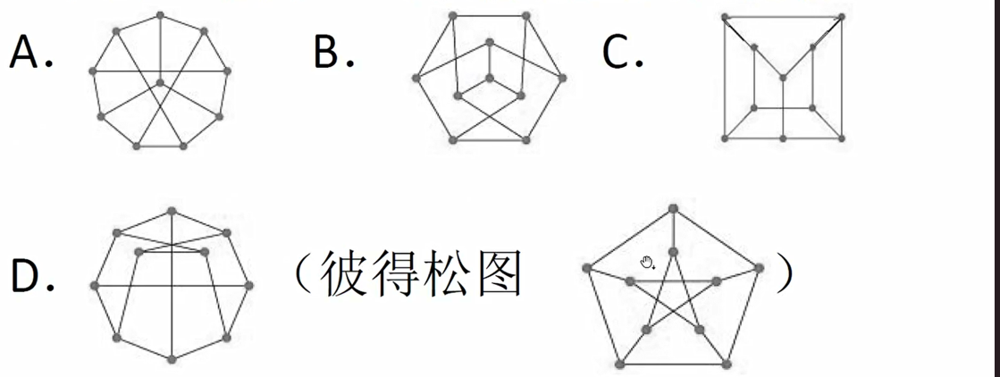
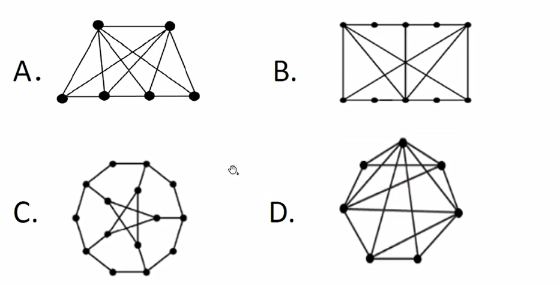
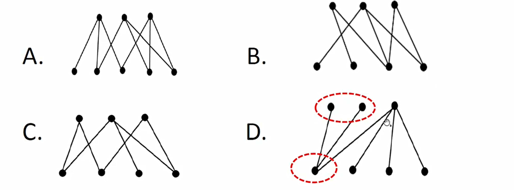
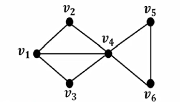

整本阅读保留全部折叠层级。使用章节目录可分章阅读。
离散数学与结构 (I)
这份资料沿着“语言与证明 → 代数结构 → 计数与随机性 → 信息、图与算法”组织。先读每章常显的学习主线，再展开定义、定理和引理；证明与解释放在第二层，便于先独立回忆，再检查推理。
范围与阅读顺序
以课程主页列出的 2025 年完整教学范围为骨架，对齐 2026 年已经公布的内容；另外收录历年出现的类型论、Galois 理论与分支过程。2026 年后续进度尚未全部公布，历史范围不等于本年度考试承诺。
| 阶段 | 阅读重点 | 完成后的能力 |
|---|---|---|
| 基础 | 集合、逻辑、ZFC、数论 | 区分对象、语言、模型和证明；写清量词与适用条件 |
| 结构 | 群、作用、环、域 | 从同态寻找核与像，借助商结构化简问题 |
| 计数 | 组合、生成函数、对称性 | 先确定计数对象，再选择双计数、递推或群作用 |
| 随机 | 概率、信息、集中不等式 | 把目标改写为期望、散度或尾概率 |
| 应用 | 傅里叶、编码、Markov 链、图、概率方法 | 连接代数、分析与随机构造 |
使用约定
所有知识条目默认收起，标题显示条目类型和名称。章节导读、方法选择和范围说明常显。原题、来源链接和证明相互区分；标为“证明思路”的条目仅提供路线，不冒充完整证明。复杂元定理应结合原教材阅读全文。
符号约定：；；群单位元为 。环论章节默认交换含幺环，另作说明的矩阵环除外。信息量使用 ，指数尾界使用自然对数 ，两者的散度记号分开。
来源与核对
- 课程主页：教学进度、作业和历年试卷入口。
- 师生合编笔记：李新年、严绍恒等师生整理，作为章节与知识点覆盖索引。
- 教材目录：《离散数学与结构》、A Course in Discrete Structures，以及逻辑、代数、信息论等专题参考书。
- 课程题库：作业及往年考试备选题。题库里的题不能在未核对试卷前一概标成“某年真题”。
- 本地资料：
离散.zip内的历年作业与笔记，24ls.zip内的试题整理，以及两份扫描试卷。未能从卷面确认年份或课程归属的材料明确标记为补充资料。
本站以独立编写的知识整理为正文，不整本转载参考教材。完整试卷与作业通过原始链接查阅；本地扫描试卷保留图像，避免 OCR 将公式或图结构识错。
查漏方式
复习一道题时依次确认：对象是什么、条件能否满足、调用哪条结论、结论是否足够强、是否存在极端例子。群论检查有限性与正规性；概率检查独立性；逻辑检查自由变量限制；信息论检查对数底；图论检查是否简单、连通和无向。
01 · 集合、关系与无穷
集合论提供全部课程的对象语言。有限计数依赖双射，无穷比较也依赖双射；关系用于把对象分成等价类或排成偏序，商集合则是商群、商环的前身。
集合与映射
定义集合运算与幂集
表示 的每个元素属于 ；。差集为 ，对称差为 。笛卡尔积 由有序对 组成。
解释与边界
恒成立，但 未必成立。 有一个元素。判断集合恒等式可逐元素比较，或用特征函数；对称差对应模二加法。
定义函数、单射、满射与双射
函数 对每个 指派唯一 。单射指 ；满射指 ；双射兼具两者。逆像 对任何函数均有定义，逆函数则要求双射。
解释
逆像保持并、交、补（补相对于定义域和陪域），像保持并但一般不保持交。，单射时取等。
定义等价关系、偏序、全序与良序
等价关系满足自反、对称、传递；等价类 组成商集。偏序满足自反、反对称、传递；全序要求任意两点可比；良序要求每个非空子集有最小元。
解释
反对称不是“不对称”： 且 蕴含 。极大元只排除严格更大的元素；最大元还要大于等于所有元素。有限非空偏序集有极大元，但不一定有最大元。
定理等价关系与划分一一对应
等价关系的等价类互不相交且覆盖原集合。反过来，任意划分通过“落在同一块中”定义等价关系。
证明
自反性保证覆盖。若 含 ，由对称性与传递性得 ，再得 。反方向逐条验证三条性质即可。
定义关系闭包
自反闭包加入全部 ；对称闭包加入全部反向边；传递闭包 ，其中关系复合对应沿边走一步。自反传递闭包为 。
解释
有限集合中可用可达性计算传递闭包。对有向图先忽略方向，再取连通分量，得到包含原关系的最小等价关系。
基数与对角线
定义基数、可数与不可数
表示存在双射； 表示存在单射 。有限集与能和 建立双射的集合统称至多可数；不至多可数的集合称不可数。
解释
、 可数，有限字符串集合可数。可数个可数集之并在通常 ZFC 框架内可数；枚举二维指标可按对角线进行。无限字符串集不等于有限字符串集。
定理Cantor 定理
任意集合 满足 。
证明
给出单射。若存在满射 ，令 。取 使 ，则 ，矛盾。
定理Cantor–Schröder–Bernstein
若存在单射 与 ，则存在双射 。
证明
令 ，，。在 上用 ，在 上用 。后者有定义。前一部分的像是 ，后一部分恰好映到 ，所以拼接映射为双射。
定理实数不可数
不可数，且 。
证明思路
对任何声称穷尽二进制序列的列表，第 位取与第 行第 位相反的数，所得序列不在列表中。用三进制仅含 0、2 的展开可将此序列空间单射到实数，避免二进制展开的不唯一问题；反向可用实数的有理下割编码。
定义序数与基数运算
序数是由隶属关系良序的传递集合，、，第一个无限序数为 。基数可选为同一等势类中最小的序数。基数加法用不交并、乘法用笛卡尔积、幂用函数集合定义。
解释
序数记顺序类型，基数只记大小； 而 ，序数加法不交换。函数集合满足 ，由“柯里化”双射 得到。
定理超限归纳与良序比较
在良序集上，若每个元素的所有前驱满足某性质便能推出该元素也满足，则全体元素满足。任意两个良序集，一个与另一个相同或某个初始段序同构。
证明思路
超限归纳若失败，取最小反例便矛盾。比较定理将两个良序集的同构初始段匹配，利用良序消除分歧；匹配的并必须耗尽至少一侧。结合选择公理可得任意集合的基数可比较。
做无穷题时优先寻找编码和双射，而不是套用有限集合直觉。无限真子集可以与原集合等势；“所有有限对象”与“所有无限序列”往往属于不同基数。
02 · 命题逻辑与证明系统
逻辑有两条平行路线：语义问“所有赋值中是否为真”，语法问“能否按规则推出”。可靠性连接语法到语义，完备性连接语义到语法。
语义与自然演绎
定义公式、赋值与逻辑后承
命题公式由命题变元、 与连接词递归构成。 当且仅当前件真、后件假。 表示每个满足 的赋值都满足 ； 表示永真； 表示存在形式推导。
解释
可满足是“存在一个模型”，有效是“每个模型都成立”，二者不能交换。蕴含式 是语言里的公式， 是关于公式的元语言陈述。
定义自然演绎规则
合取引入由 得 ，消去可取任一分量。蕴含消去由 得 ；蕴含引入在临时假设 下导出 后撤销假设。析取引入可加入另一分支，析取消去要求两个分支导出同一结论。 消去允许从矛盾推出任意式。令 缩写 。
解释
证明必须跟踪尚未撤销的假设。析取消去中不能只证明一个分支；蕴含引入不是删除一切假设，而是撤销指定临时假设。
定义RAA、经典逻辑与直觉主义逻辑
RAA 规则是在假设 下导出 ，进而撤销该假设并得出 。保留标准自然演绎而不使用 RAA 得到直觉主义系统；加入 RAA 得到经典系统。
解释
从 假设导出矛盾并得 是否定引入，本身不需要 RAA。经典系统允许双重否定消去和排中律；直觉主义一般不允许。
定理可靠性与完备性
经典命题自然演绎满足 。
证明思路
可靠性对推导树归纳，逐条检查规则保真。有限前提的完备性可按真值表逐赋值构造证明，再用排中律合并情形；一般前提使用紧致性或极大一致集构造。不要把“某一种语义不完备”误解成该系统对一切语义不完备。
定理演绎定理与紧致性
自然演绎中 。命题集合可满足，当且仅当它的每个有限子集可满足。
证明
前一结论分别由蕴含引入与消去得到。紧致性可由完备性与“证明只使用有限个前提”推出：若整体不可满足，能推出 ，该证明只用有限前提，因而某有限子集已不可满足。
直觉主义与序列演算
定义Kripke 模型
模型由偏序世界集 与向上保持的原子真值组成。 当且仅当每个 中， 蕴含 ；没有世界强迫 。合取、析取按相应局部规则解释。
解释与反例
取 ， 只在 成立。则 不强迫 ，也不强迫 ，所以不强迫排中律。否定要求所有未来世界都无法使被否定公式成立。
引理强迫关系的单调性
若 且 ，则 。
证明
对公式结构归纳。原子情形是模型条件；合取、析取直接继承。蕴含情形中， 的未来世界也是 的未来世界，故条件仍成立。
定义序列与 System K 的阅读方式
多后件序列 表达：若左侧全部为真，则右侧至少一个为真。空后件表示矛盾。课程里的 System K 按所引用序列演算教材理解，不应和模态逻辑中的同名系统混淆。
解释
典型蕴含右规则将 变成 。结构规则处理交换、弱化和收缩；具体可用规则以原题给出的系统为准。
例题Peirce 律的经典证明
证明 。
证明
假设 。再假设 ，临时假设 即得矛盾，由爆炸律得 ，撤销 得 。与 得 ，再次矛盾。用 RAA 撤销 得 ，最后撤销 。关键的经典步骤正是 RAA。
检查证明时先标出假设作用域，再检查每次消去规则的输入。要否证“可推导”，应寻找适用于该系统的反模型，而不是只说真值表没有帮助。
03 · 一阶逻辑、算术与公理集合论
一阶逻辑允许讨论对象和关系；算术与集合论则在相同逻辑之上选择不同的非逻辑公理。必须区分“逻辑的完备性”和“一个理论能否决定每个句子”。
一阶语言与推导
定义项、公式、结构与赋值
项由变量、常元及函数符号构造；原子公式由谓词作用于项或项的等式构造。结构指定非空论域及符号解释，变量赋值指定变量的对象。 要求论域内每个 都满足 ， 要求至少一个见证。
解释
自由变量不处在对应量词作用域内；无自由变量的公式叫句子。替换项时要避免变量捕获，必要时先重命名受约束变量。
定义量词的自然演绎规则
可从 得到合法代入的 ； 从一个见证推出存在。 要求泛化变量不自由出现于仍在使用的假设； 引入新鲜见证后，最终结论与外部假设不得依赖该见证。
解释与反例
从假设 直接推 一般非法，因为 是特定对象。 蕴含 ，反方向不成立；在自然数上取 为 即得反例。
定理一阶逻辑可靠性、完备性与紧致性
对标准经典一阶逻辑，。理论有模型当且仅当每个有限子理论有模型。
证明思路
可靠性对证明归纳。完备性通过添加见证常元、扩张为极大一致理论，再构造项模型证明；带等号时须按可证明相等取商。紧致性由完备性和证明有限性推出。
定理非标准算术模型的存在
若一阶 Peano 算术 PA 有模型，则它有含有大于每个标准自然数的元素的模型。
证明
加入常元 和所有句子 。任意有限子集在标准自然数结构中可取足够大的 满足。紧致性给出整体模型，其中 大于每个标准数码；这不表示模型内存在“大于所有元素”的元素。
定义Peano 算术与归纳公理模式
PA 包含零、后继、加法、乘法的公理，如 、后继单射、、、、，以及每个公式对应的归纳公理：。
解释
一阶归纳是一族公理，不是对所有子集直接量化的一条公理。证明加法交换律通常先证 、，再对第二个变量归纳。
ZFC 与不完备性
定义ZFC 公理体系
外延：同元素即同集合；空集：存在无元素集合；配对：可组成二元集合；并集：可合并集合族；幂集：全部子集构成集合；无穷：存在归纳集；分离模式：从已有集合按公式筛选；替换模式：集合在可定义单值对应下的像是集合；正则：每个非空集合含与其不交的元素；选择：非空集合族可逐一选取元素。空集在部分表述中可由其他公理推出。
解释
分离不允许任意性质直接构成“所有满足性质的对象”的集合。罗素类 不能当作集合，由此避免朴素概括的悖论。公理模式包含无穷多条公式。
定理选择公理的常见等价形式
在 ZF 上，选择公理、每个集合可良序化、Zorn 引理等价。Zorn 引理说：非空偏序集中每条链有上界，则存在极大元。
证明思路
良序使逐个选取成为可能；选择公理通过超限构造得到良序；Zorn 可对部分选择函数或部分良序结构按延伸排序使用。链的上界不必属于这条链，也不必是整个偏序集的最大元。
定理正则公理排除有限隶属环
ZFC 中不能有 ，也不能有 。
证明
将环上元素组成非空集合 。每个 都与 相交，与正则公理要求存在 矛盾。注意 与 完全不同， 始终成立。
定理Gödel 第一不完备定理（Rosser 加强形式）
任何一致、可有效公理化并足以表达基本算术的理论，都存在该理论既不能证明也不能否定的句子。
解释与证明思路
用 Gödel 编码把语法变成算术对象，再用对角化构造关于可证明性的句子。Rosser 技巧将原定理较强的一致性要求弱化为通常一致性。这里理论层面的不完备不与一阶逻辑的语义完备性冲突：独立句子在不同模型中可取不同真值。
定理Gödel 第二不完备定理
足够强且一致、可有效公理化的算术理论，在标准可证明性编码与可推导条件下，不能证明表达其自身一致性的句子 。
解释
这不禁止较强理论证明较弱理论的一致性，也不表示任何关于系统可靠性的日常论证都不可能。有效公理化是关键条件；不可计算地逐个补齐独立句子不能绕开这个条件得到有效完备算术。
历年拓展：类型论
定义类型判断与 Curry–Howard 对应
表示在上下文 中项 具有类型 。简单类型 对应蕴含，函数项对应证明，函数应用对应蕴含消去， 抽象对应蕴含引入。积类型对应合取，和类型对应析取。
解释
具有类型 。 通过 归约成为 ，替换仍要防止变量捕获。依赖类型允许类型依赖项，、 分别表达依赖函数与依赖配对。
定义归纳、结构归纳与余归纳
数学归纳沿自然数的零与后继证明；结构归纳沿语法或数据的构造子证明；余归纳常用于无限行为，通过保持关系的逐步观察证明两个过程等价。
解释
对公式证明“每个公式有某性质”应分别检查原子和每种连接词构造，而不是只举几个公式。有限推导树可对高度归纳；无限流则适合建立双模拟关系。
04 · 初等数论
数论的基本手段是把整数关系改写为线性组合与同余。Euclid 算法处理最大公因数，Bézout 处理可解性，中国剩余定理把互素模数拆开。
定义整除、最大公因数与同余
指 对某整数 成立。非全零整数 的最大公因数取正值。 表示 ，这里 。
解释
模运算中可以加、减、乘；约去因子需要条件。由 仅能推出 。
定理Euclid 算法与 Bézout 恒等式
，且存在整数 使 。
证明
两边具有相同的公因数。重复带余除法直到余数为零，最后非零余数即最大公因数；逆向代入每一步除法，得到线性组合。反过来仅有 还不足以说明 是最大公因数，需再证明 为公因数。
引理Euclid 引理与算术基本定理
若 为素数且 ，则 或 。每个大于 1 的整数可唯一分解为素数乘积，忽略因子顺序。
证明
若 ，则 ，用 Bézout 得 ，乘以 即得 。分解存在性对整数归纳；唯一性逐个用 Euclid 引理消去素因子。
定理线性同余方程
可解当且仅当 整除 。可解时模 恰有 个不同解；模 有唯一解。
证明
方程等价于 ，Bézout 给出充要条件。除以 后 与 互素可逆，解为某个 模 的同余类，在模 中展开得到 个代表。
定理中国剩余定理
若 两两互素，则任意 有唯一模 的解。等价地 。
证明
置 ，取 ，则 满足全部同余。两解之差被每个 整除，故被 整除。模数不互素时还需余数在公因数模意义下相容。
定义Euler 函数与单位群
是 中与 互素者个数，等于单位群 的阶。。
解释
用容斥排除能被各素因子整除的整数即得公式。素数幂满足 ；互素数满足 。
定理Euler 定理与 Fermat 小定理
若 ，则 。若 为素数，任意整数 满足 。
证明
在单位群使用 Lagrange 定理，元素阶整除群阶。Fermat 的互素情形由 得到； 的情形直接成立。约化指数前必须先检查互素条件。
定理Wilson 定理
整数 为素数，当且仅当 。
证明
素数情形在单位群中把互逆但不相等的元素配对，留下 ，积为 ， 单独检查。反向若 合成，取真因子 ，则 ，不可能同时有 。
引理指数差的最大公因数
对整数 和正整数 ，。
证明
当 ，用 ，将指数对替换为 。按 Euclid 算法反复操作，终止时得到 。
定义二次剩余、Legendre 符号与 RSA
奇素数 下，非零平方称二次剩余； 分别在非零平方、非平方、零时取 。Euler 判别为 。RSA 的数学模型取不同素数 、，选 ，加密 ，解密取 次幂。
解释与证明思路
有限域乘法群循环，平方对应偶指数，因而恰占非零元素的一半并得到 Euler 判别与乘法性。RSA 正确性分别在模 、模 下用 Fermat（整除时直接检查），再用 CRT 拼合。这里仅说明数论原理，不是实际安全加密协议的完整实现。
例题一次同余与模幂
求解 ，并求 。
解答
，约去后为 ，即 ；在 90 到 99 中为 92、97。，故 。
05 · 群与同态
群把“可逆操作”抽象出来。先认识子群和陪集，再理解正规性为何保证商运算良定义，最后用同态把复杂群分解为核与像。
定义半群、幺半群、群与 Abel 群
封闭二元运算满足结合律得到半群；有单位元得到幺半群；每个元素可逆得到群；再满足交换律得到 Abel 群。元素阶是使 的最小正整数，不存在时为无限阶。
解释
单位元唯一，逆元唯一，，消去律成立。有限可消去幺半群必为群；无限情形不成立，如 。
引理子群判别法
非空子集 为子群，当且仅当对所有 有 。
证明
取 得 ；取 得逆元封闭；再把 代入得到乘法封闭。结合律从 继承。
定义生成子群、循环群与置换群
为包含 的最小子群。单个元素生成的群称循环群。 为 个点上的置换群， 为偶置换子群。置换可分解为不交循环，阶等于循环长度的最小公倍数。
解释
长度 的循环符号为 ；置换复合先作用哪一侧要统一约定。， 时 。
定理循环群的子群
无限循环群同构于 ； 阶循环群同构于 。循环群的子群仍循环；对每个 ， 阶循环群有唯一的 阶子群。
证明
映射 的核为 或 。对子群取最小正指数 使 ，带余除法说明每个子群元素均由 生成。另有 。
定理Lagrange 定理
有限群 的子群 满足 。元素阶整除群阶。
证明
左陪集构成 的划分，每个陪集经 与 等势。取 得后半句。整除关系的逆命题一般不成立：群阶的每个因子未必都对应一个子群。
定义正规子群与商群
表示 对每个 成立，等价于左右陪集相等。商群 以陪集为元素，。
解释
正规性保证更换代表元不改变乘积陪集。指数为 2 的子群必正规。Abel 群的每个子群正规；正规性本身不传递， 不自动推出 。
定理群的第一同构定理
群同态 的核正规，像为子群，且 。
证明
说明核正规。映射 良定义且保乘法；相同像当且仅当两代表元相差核中的元素，故单射；满射来自像的定义。
定理第二、第三同构定理与对应定理
若 、，则 。若 且 ，则 。包含 的子群与 的子群通过取像、取逆像一一对应，并保持正规性。
证明思路
第一式限制自然映射到 ，核为 ；第二式使用 ，核为 。对应定理检查 与 。
定义换位子群、可解群与自同构
。若反复取换位子群最终得到平凡群，则 可解。自同构组成 ，共轭映射组成内自同构群 。
解释
，且 为 Abel 群当且仅当 。，并正规于 ，因为 。
定理有限生成 Abel 群结构定理
每个有限生成 Abel 群同构于 ，其中 ，这些不变量唯一。有限 Abel 群也可唯一分解为素数幂阶循环群的直积。
证明思路
把生成元间关系写为整数矩阵，以可逆整行整列运算化成 Smith 标准形。对角元给出有限循环因子，零方向给出自由部分。注意 与 同阶但不同构，可用元素阶区分。
处理同构题时，先明确映射，再依次验证良定义、保运算、单射与满射。不能用“元素个数相同”直接认定同构。
06 · 群作用与 Sylow 定理
群作用把抽象元素变成对对象的置换。轨道统计“能到哪里”，稳定子统计“哪些操作不动它”，共轭作用把这套思想用于群自身。
定义群作用、轨道与稳定子
左作用满足 、。轨道 ，稳定子 。作用等价于同态 ；核平凡称忠实，只有一个轨道称传递。
解释
稳定子是子群，同一轨道上稳定子互为共轭。不要把“忠实”与“没有非单位元固定任何点”混淆，后者是自由作用。
定理轨道—稳定子定理
与左陪集集合 双射；有限情形 。
证明
映射 满射。两像相等当且仅当 ，恰好等价于两个陪集相等，故良定义且单射。
定理Cayley 定理
每个群同构于某个置换群的子群；有限 阶群可嵌入 。
证明
让 在自身上左乘，给出 ，其中 。这是同态，且 表明核平凡。
定义共轭类、中心与中心化子
，，。共轭作用中 正是稳定子。
解释
。在 中，置换共轭当且仅当循环型相同。正规子群是包含单位元且满足子群条件的共轭类并集。
定理类方程与有限 p 群的中心
有限群满足 ，求和取非中心共轭类代表。若 、，则 非平凡。
证明
共轭类划分群。非中心共轭类大小为大于 1 的 次幂，故 ；中心含单位元，因此至少有 个元素。进一步 阶群必 Abel：若商去中心为循环群，则群本身交换。
定理Cauchy 定理
若素数 整除有限群阶，则群含阶为 的元素。
证明思路
考虑积为 的 元组集合，共有 个。循环移位作用的轨道大小为 1 或 ；固定点是 且 。固定点数被 整除，已有单位元固定点，故还有非平凡解。
定理Sylow 三定理
设 ，。存在 阶子群；每个 子群包含在某 Sylow 子群中，所有 Sylow 子群共轭；其数目 满足 且 。
证明思路与用法
存在性可用子集上的作用和轨道计数证明；让一个 子群作用于 Sylow 子群的陪集，得到包含性与共轭性；再对共轭作用计数得到数目限制。使用时先列出同时满足整除和同余的候选； 当且仅当 Sylow 子群正规。
例题15 阶群的结构
证明每个 15 阶群为循环群。
证明
且 ，故 ； 且 ，故 。两个正规子群的交为平凡群，换位子同时落在二者中，故彼此交换；其乘积为全群，得到 。
例题正方体旋转群
正方体保持定向的旋转群同构于 ，共有 24 个元素。
解释
让旋转作用于四条体对角线得到忠实置换表示。选择一个面朝上有 6 种，再选择周围方向有 4 种，因此群阶 24，单射到 即满射。共轭类型对应恒等、面对轴四分之一转、面对轴半转、棱对轴半转、顶点对轴三分之一转；顶点轴旋转角度为 或 ，不是半周。
07 · 环、理想与整除结构
环兼有加法和乘法。群的正规子群在这里由理想取代；理想控制何时能取商，商环是否为整环或域又反映理想的素性或极大性。
定义环、整环、域与单位
含幺环的加法构成 Abel 群，乘法结合且有单位元，满足两侧分配律。交换环中非零元素的积非零称整环（要求 ）；非零元素均可逆称域。可逆元素称单位；非零 满足 时称零因子。
解释
是域当且仅当 为素数。矩阵环 通常不交换且有零因子；不能把交换环的理想定理不加说明地用于矩阵环。
定义理想、主理想与商环
理想 是加法子群且 对所有 成立。主理想 ； 的加乘由代表元运算定义。在非交换环中，构造商环需要双边理想。
解释
在整数环中 当且仅当 ，包含方向与整除方向相反。例如 。所有整数环理想均为主理想。
定理环的同构定理
环同态 满足 。包含 的理想与 的理想一一对应；若 ，则 。
证明
第一式使用 ，检验良定义、保加法和乘法，再用核判定单射。其余两式通过自然商映射的取像与取逆像得到。
定理素理想与极大理想判别
对交换含幺环的真理想 ， 为素理想当且仅当 为整环； 为极大理想当且仅当 为域。极大理想必为素理想。
证明
商环无零因子等价于 或 。极大性等价于商环只有零理想与全环；任意非零 生成全环，故存在 使 。反向域的非零理想包含单位元。
定理环的中国剩余定理
若 ，则 。交换环中此时 。
证明
映射 的核为交。写 ，，则 映到 ，故满射。若 ，则 ；反包含显然。
定义Euclid 整环、PID 与 UFD
Euclid 整环具有允许带余除法的非负整数值度量；PID 的每个理想都为主理想；UFD 中每个非零非单位可分解为不可约元素之积，且在顺序与单位因子意义下唯一。
解释
不可约指无法分解为两个非单位；素元指整除乘积则整除某个因子。素元必不可约，逆命题一般不成立，但在 UFD 中成立。
定理Euclid 整环 ⇒ PID ⇒ UFD
上述三类整环具有依次减弱的条件，一般不可逆。
证明思路
在非零理想中取度量最小的元素，用带余除法迫使余数为零，得到主理想。PID 的理想升链终止保证分解存在；不可约元素生成极大理想，因而为素元，保证唯一性。
引理Gauss 引理与多项式不可约性
UFD 上两个本原多项式之积仍本原；本原多项式在 UFD 上不可约，当且仅当在其分式域上不可约。域上多项式环 为 Euclid 整环。
证明思路
若某素元整除乘积全部系数，模该素元约化会得到两个非零多项式乘积为零，与系数商整环矛盾。清分母并分离内容，可将分式域分解拉回原环。
定理Eisenstein 判别法
整数多项式 若存在素数 满足 、（）且 ，则在 中不可约。
证明思路
若能分解为整数本原多项式，模 后每个因子只能是首项单项式乘常数，所以两个正常次数因子的常数项均被 整除，从而 ，矛盾。
定理链条件与整环的 Artin 条件
PID 满足理想升链条件 ACC。若整环满足理想降链条件 DCC，则它是域。
证明
升链之并为理想，在 PID 中由一个元素生成，该元素已在某一项中，故此后稳定。对 DCC 考察 ；非零 的相邻幂理想最终相等，，约去 得 。
08 · 域、有限域与 Galois 理论
域扩张把“给方程添加根”转化成向量空间。扩张次数记录代数复杂度；有限域由特征与维数控制；Galois 理论用保持基域的对称性描述中间域。
定义域扩张、代数元素与最小多项式
表示 是 的子域，次数 为 作为 向量空间的维数。若 满足某个非零 多项式，则它在 上代数；首一且次数最小的湮灭多项式称最小多项式 。
解释
最小多项式不可约，且 ，次数为 。若 超越，则 同构于有理函数域 。
定理塔式定理
若 且两级次数有限，则 。
证明
设 是 的一组基， 是 的一组基，则 张成 。把线性关系先按 分组、再按 分组，得到系数全零，故为基。
定理根的添入与分裂域
任意域上的非恒定多项式可在某个扩张域中分裂成一次因子的乘积。由全部根生成的最小扩张称分裂域，分裂域在保持基域的同构意义下唯一。
证明思路
选不可约因子 ，商域 中的 陪集是一个根。反复添入尚未分裂部分的根，次数逐步下降，有限步完成。延拓基域嵌入到根的映射可证明唯一性。
定义特征、可分性与正规性
域特征为使 的最小正整数，不存在则为零；正特征必为素数。多项式无重根称可分；代数扩张的每个最小多项式均可分称可分扩张。有限扩张为某些多项式的分裂域时为正规扩张。
解释
有重根当且仅当 。特征零的不可约多项式可分；有限域也都是完美域。正规与可分是不同条件。
定理有限域的分类与乘法群
有限域大小必为 ；对每个素数幂 存在且在同构意义下唯一的域 。其非零乘法群循环，阶为 。
证明思路
有限域是其素域 上的有限维向量空间。 的分裂域内根集对四则运算封闭，且导数为 ，得到 个不同根。乘法群有限 Abel，利用多项式根数不超过次数，排除非循环的可能。
定理有限域的子域与 Frobenius
含 元子域当且仅当 ，此子域唯一。Frobenius 映射 生成 ，该群为 阶循环群。
解释
子域为方程 的根集。对一般基域 ， 的生成自同构是 。元素的最小多项式由其 Frobenius 轨道给出。
定理有限域不可约多项式的计数
记 为 中首一 次不可约多项式数，则 ，从而 ，其中 为数论 Möbius 函数。
证明
恰好由次数整除 的首一不可约多项式各一次相乘组成，比较次数得到第一式，再用除数格的 Möbius 反演。例：。
定理Galois 基本定理（有限情形）
设 是有限正规可分扩张，。中间域 与子群 通过 、 反向一一对应，且 。 正规当且仅当 ，此时 。
解释与证明路线
核心是 Artin 固定域定理和嵌入延拓。先证明有限自同构群的固定域扩张次数等于群阶，再证明两个映射互逆。包含越大的子群，固定的元素越少，因此对应反向。不能对任意非 Galois 扩张直接使用全套对应。
例题二次扩张与四次扩张
的 Galois 群为 ； 的 Galois 群为 。
解释
第一例自同构由 决定。第二例两个符号可独立改变，三个二次中间域分别为 、、，对应三个二阶子群。
09 · 组合计数与生成函数
计数的第一步是说清对象是否有标号、顺序是否重要、重复是否允许，以及是否把对称对象视为相同。公式应在模型确定后再选择。
定理加法、乘法、双计数与鸽笼原理
互斥情况数相加，分步选择数相乘（每步选择数需对先前选择一致，或逐情况求和）。同一有限集合可从不同方向计数。将 个对象分进 个盒子，至少一盒含 个对象。
证明
加法来自不交并，乘法来自笛卡尔积，双计数来自对同一对象集合建立两个枚举。若每盒都少于 个，总数就小于 。
定义排列、组合与多项式系数
从 个不同对象选 个并排序有 种；不排序有 种。把 个标号对象分成大小为 的标号组有 种。
解释
有重复元素的字符串也是多项式系数计数。若组无标号，不能总是直接除以组数阶乘，要检查群作用是否自由。
定理二项式定理、Pascal 与 Vandermonde 恒等式
；；。
证明
展开乘积时按选取 的位置分类。Pascal 按固定元素选或不选分类。Vandermonde 将两个不交群体中共选 人，按第一群体所选人数分类。
定理隔板法与受限盒子
的非负整数解有 个；正整数解有 个（）。若 ，解数为 。
证明
非负解对应 个球与 个隔板的排列。正解先每盒放一个。上界条件用生成函数时每个因子的指数恰是该盒占用数。
定理容斥原理与反演
。若 ，则 。
证明
某元素若属于 个集合，在右边被计入 次。反演交换求和，内部二项式和除最大项外为零。
定理错排与满射计数
个元素的错排数 。从 到 的满射数为 。
证明
错排排除固定点事件；满射排除“某个值未被取到”的事件，分别直接应用容斥。
定义普通生成函数与指数生成函数
序列 的 OGF 为 ，EGF 为 。形式幂级数运算按系数定义，不要求先讨论数值收敛。
解释
OGF 乘积系数是普通卷积 ；EGF 乘积对应 ，适合标号结构。 是取系数，不是代入 。
定理递推与有理生成函数
常系数线性递推的 OGF 是有理函数。以 为例，。
证明
将递推乘 后从适当起点求和，注意补回初值。此例得到 。取系数可用部分分式、根分解或幂级数展开。
定理Catalan 数
不越过对角线的 对括号、Dyck 路径等由 计数。，，。
证明思路
按第一对匹配括号分成内部与之后两段得到递推。反射原理将坏路径与具有 个一种步、 个另一种步的路径双射，故 。
定义Stirling 数与整数分拆
第二类 Stirling 数 计数把 个标号元素分为 个非空无标号块，满足 。整数分拆数的 OGF 为 。
解释
Stirling 递推按最后元素单独成块或加入旧块分类。分拆的第 个因子记录部件 的使用次数。整数分拆、集合划分、整数有序拆分是三种不同问题。
对称性计数
引理Burnside 引理
有限群 作用于有限集 时，轨道数为 。
证明
双计数 。按 数得不动点和，按 数得稳定子大小和。每条轨道贡献 ，除以群阶即得轨道数。
定理Pólya 计数
置换群 作用于 个位置， 为长度 的循环数，循环指标 。用 种颜色染色的轨道数为 ；带颜色权重时令 。
证明
染色被置换固定当且仅当每个循环内颜色相同。无权时每个循环有 种颜色；有权时长度 的循环使用颜色 贡献 。再应用 Burnside。
例题旋转项链
长度 、 色、仅将旋转视为相同的项链数为 。
解释
旋转 格将位置分为 个循环。若还把镜面反射视为相同，应使用二面体群并另计反射不动点，不能直接把上式再除以二。
10 · 概率基础与概率生成函数
先指定随机实验，再定义随机变量。求和型问题优先用指示变量和期望线性性；事件分解优先用条件概率；独立和的分布优先用卷积或生成函数。
定义概率空间、条件概率与独立性
离散概率空间给每个结果非负质量且总和为 1。（）。独立指 ；一族事件相互独立要求每个有限子族满足乘法公式。
解释
两两独立不保证相互独立。抛两枚独立公平硬币，第一枚正面、第二枚正面、两枚同面三个事件两两独立但并非相互独立。互斥且概率均正的两个事件不独立。
定理全概率与 Bayes 公式
若 构成划分，则 。对正概率事件 ，。
证明
把 拆成不交并 。Bayes 公式把 用两种条件概率表达后相等即可。
定理期望、方差与协方差
，。 不要求独立。。
解释
独立或两两不相关时交叉项消失。计数变量 满足 ，常无需计算 的完整分布。
定理全期望与全方差
，。
证明
全期望交换联合分布求和。全方差把 分解成 与 ，条件期望使交叉项为零。
定义常用离散分布
Bernoulli：均值 、方差 ；Binomial：质量 ，均值 、方差 ；Poisson：质量 ，均值方差均为 ；几何分布按首次成功的试验次数取值 ，均值 、方差 。
解释
超几何分布描述无放回抽样：总体 件有 件目标，抽 件，命中 件的概率为 。几何分布若从“成功前失败次数”开始计数，均值变为 。
定理概率生成函数
非负整数随机变量的 PGF 为 ，，（有限时）。独立时 。
证明
逐项求导得到阶乘矩。独立性给 。例如 Poisson 的 PGF 为 ，独立 Poisson 之和仍为 Poisson，参数相加。
定理尾和公式与集券问题
非负整数值 有 。均匀独立抽取 种券，集齐全部的期望次数为 ，其中 。
证明
写 。集券时已得 种，新券概率为 ，等待期望 ，对阶段求和。期望相加不需要各等待时间独立。
定理Jensen 不等式
若 为凸函数且相关期望存在，则 ；凹函数方向相反。
解释
离散情形是凸性对加权平均的直接推广。 为凹函数， 为凸函数；用错方向会导致错误的熵或尾界证明。
定理分支过程的灭绝概率（历年拓展）
Galton–Watson 过程从一个个体开始，每个个体独立产生服从同一非负整数分布的后代，PGF 为 。最终灭绝概率 是 内 的最小解。若后代不恒等于 1 且均值有限，均值不超过 1 时必灭绝，均值大于 1 时 。
证明思路
第 代前灭绝概率满足 、，单调趋于最小不动点。利用 的凸性、 与 分析交点。后代恒为 1 是临界但不灭绝的例外。
11 · 熵、散度与互信息
熵衡量平均不确定性，散度比较分布，互信息衡量观察带来的平均信息。计算时先固定联合分布，再由边缘化和条件化得到所需项。
定义熵、联合熵与条件熵
离散随机变量的熵 ，约定 。联合熵对联合分布计算；。
解释
确定变量熵为零。条件熵是各条件分布熵的平均，不是一个随机量；连续微分熵有不同性质，本章结论默认离散变量与有限信息量。
定义KL 散度与互信息
。若 则为正无穷。。
解释
KL 一般不对称，不满足距离的三角不等式。自然对数版本记 ，尾界 等于 。
定理Gibbs 不等式
，等号当且仅当 。
证明
在支撑兼容时用 ：。等号要求支撑外无质量且每个比值为 1。不兼容时散度为正无穷。
定理熵链式法则与条件化
，。，，等号当且仅当独立。
证明
把联合概率分解为边缘概率乘条件概率，再展开对数。互信息非负应用 Gibbs 不等式。条件熵非负本身不足以证明互信息非负，必须证明条件熵不超过原熵。
定理最大熵与次可加性
取值不超过 个的变量满足 ，等号为均匀分布。，等号在相互独立时成立，有限熵情况下也为必要条件。
证明
与均匀分布比较，散度为 。次可加性由链式法则与条件化降低熵逐项得到。
定理散度链式法则与数据处理
。通过相同随机信道处理两分布不会增加散度。若 构成 Markov 链，则 。
证明思路
散度链式法则直接分解对数。边缘化不增散度由条件项非负得到；对联合分布施加同一信道再边缘化即得一般结论。互信息版本也可用 的两种链式展开以及 推出。
定理Pinsker 不等式
总变差 满足 ；以比特计则 。
证明思路
取 ，则 为总变差。数据处理把分布压成 的 Bernoulli 分布，再对二元散度用凸性或求导得 。
定理Shearer 型三变量熵不等式
。有限集合 的三个二维投影大小为 时，。
证明
三组两变量熵之和减去 ，等于 ，非负。再取 上均匀分布，联合熵为 ，各投影熵被其支持集大小的对数上界控制。
互信息的多变量推广有不同约定。条件互信息非负，但三变量交互信息 可以为负，不能机械套用二元互信息结论。
12 · 集中不等式与大偏差
尾界按已知信息选择：只知均值用 Markov，知道方差用 Chebyshev，具有独立性和矩母函数控制时用 Chernoff。Sanov 从经验分布角度解释指数衰减率。
定理Markov 与 Chebyshev 不等式
若 ，。若方差有限，则 。
证明
，取期望得 Markov。将其用于非负变量 得 Chebyshev。不能把 Markov 直接用于可取负值的 。
定理Chernoff 矩母函数界
对 ，；对独立和 ，右边为 ，可对 取下确界。
证明
对 使用 Markov；独立性拆开乘积期望。下尾可用 对事件重新推导，不能沿用上尾的单调方向而不检查。
定理Bernoulli 的 KL 尾界
独立 ， 时 ，其中 。 时有对应下尾界。
证明
矩母函数为 ，使 最小的参数满足 。代回得到散度。注意散度第一参数是偏离目标 ，第二参数是真实均值 。
定理乘法型 Chernoff 界
独立 Bernoulli 之和 的均值为 。 时 ； 时 。
证明思路
用 控制矩母函数，再优化 。下尾类似。最后用对数的二阶估计简化精确指数。
定理Hoeffding 不等式
独立变量 满足 。两侧界在右边乘 2。
证明思路
先用凸性证明有界中心化变量的矩母函数不超过 ，再相乘并优化参数。若变量范围不受限或缺少独立性，不能直接套用。
定理弱大数定律
独立同分布且方差有限的 满足 （依概率）。
证明
，用 Chebyshev 得每个固定 的偏差概率至多 ，趋于零。
定理Stirling 公式与类型计数
。在 元字母表上，长度 的经验分布（类型）至多有 种；类型 的序列数不超过 。
解释
类型类的精确大小为多项式系数 。Stirling 展开给出主指数 及多项式规模的修正项。
定理有限字母表的 Sanov 上界
独立样本来自 ，经验分布为 ，对任意分布集合 ，。精确渐近指数还需内外逼近等正则条件。
证明思路
每个类型 的单个序列概率为 ；乘上类型类大小后得到 上界，再对不超过 个类型求和。不能随意删除有限样本界中的多项式因子。
定义指数倾斜与率函数
对有限支持分布 ，令 ，。 满足 、。均值尾界的率函数为 。
解释
指数倾斜把罕见均值变成新分布中的常见均值，并连接 Chernoff 与散度最小化。在能选到 时，。
13 · 离散 Fourier 变换
Fourier 分析的核心是换基：将函数写成正交特征函数的线性组合。卷积在原空间混合许多项，在频率空间变成逐点乘法。
定义循环群上的 DFT
取 ，约定 。逆变换 。频率与位置均按模 解释。
解释
本章循环 DFT 的正向不归一化，逆向带 。其他资料可能把 放在正向或各放 ，须同步调整 Parseval 与卷积公式。
引理单位根正交性
（），否则为零。
证明
非平凡情形是公比不等于 1 的几何级数，和为 。将它代入两次变换即得逆变换公式。
定理Parseval 与卷积定理
上述约定下 。定义循环卷积 ，则 。
证明
Parseval 展开平方后用正交性消去交叉项。卷积变换交换求和并令 ，指数分解为 ，得到两个和的乘积。
定义有限 Abel 群的特征标
特征标为同态 。取归一化内积 ，特征标构成正交规范基。此处系数采用归一化约定 。
解释
与上一节的未归一化循环 DFT 系数相差群大小。常值特征标对应均值；非平凡特征标平均为零。作用 在特征标基上对角化。
定理布尔立方体上的 Fourier 展开
对 ，。均匀测度下 ，，，。
证明
，独立均匀坐标使非空乘积期望为零。共有 个正交非零函数，等于函数空间维数，故成基。
定理布尔影响与噪声算子
对 ，坐标影响 。若每个坐标独立以概率 翻转，噪声算子满足 。
证明思路
离散导数 只保留含 的 Fourier 项，平方期望即影响。噪声下每个坐标的条件均值乘 ，独立性使 个坐标产生因子 。
定理FFT 与多项式乘法
长度为 的 DFT 可用 次算术运算计算。次数分别小于 的多项式相乘，可零填充到至少 点，变换、逐点相乘、逆变换。
解释
按偶数和奇数下标拆分，得到两个长度 的变换，递推 。零填充避免循环卷积绕回。有限域 NTT 需域中存在所需阶的单位根，且变换长度可逆。
14 · 压缩与信道编码
压缩去掉冗余，信道编码增加受控冗余。无损与几乎无损、变长与定长、零错误与渐近低错误，是不同问题设定，必须先区分。
定义编码、唯一可译码与前缀码
编码将源符号映为有限字符串；单射只保证单个符号可区分；唯一可译码要求任意有限符号串的连接都可唯一解析；前缀码要求任何码字都不是另一不同码字的前缀。前缀码必唯一可译。
解释
码字集合 是非前缀的例子，但是否唯一可译需单独判断。长度计算用平均码长 ，不是最长码字长度。
定理Kraft–McMillan 不等式
二元唯一可译码的码长满足 ；反之，任何满足此式的非负整数码长集合可实现为前缀码（含零长码时只能有一个码字）。
证明思路
前缀码对应二叉树中互不为祖先的节点，按深度权重计数得到 Kraft。一般唯一可译码对长串连接计数得到 McMillan。充分性按长度依次分配互不重叠的二进制区间。
定理无损编码的熵界
对离散有限源，任何二元唯一可译码有 ；存在前缀码满足 。
证明
记 ，令 。则 。取 Shannon 长度 ，满足 Kraft 且平均码长小于 。
定理Huffman 最优性
对有限符号源，反复合并概率最小的两个符号所构造的二元前缀码使平均码长最小。
证明思路
某个最优码树可让两个最小概率符号位于最深的一对兄弟叶：交换不会增加平均码长。合并这对兄弟，问题规模减一，最优代价增加恰为二者概率和，由归纳得到贪心最优。
定理AEP 与几乎无损压缩
独立同分布有限字母源满足 （依概率）。固定长度编码中任何速率 可使块错误概率趋零； 不能实现错误概率趋零。
证明思路
信息随机变量 满足大数定律。典型集概率趋 1，大小约为 ，故可给典型序列编号。反向利用每个典型序列的概率至多约 ，低于熵速率的码字覆盖不了大部分概率。
定义通用压缩与旁信息
通用压缩器无需预知源分布；有限字母独立同分布源可先编码类型再编码类型类内序号，使额外开销每符号趋零。旁信息问题中，解码器另外观察相关的 。
解释
Slepian–Wolf 单源旁信息形式：对独立同分布对 ，仅编码 、解码器知道 ，任何 可达，低于条件熵不可达。可达性的典型证明用随机分箱；不是逐符号前缀编码结论。
定义信道与容量
离散无记忆信道由条件分布 指定，多次使用按条件独立相乘。容量 ，单位为每次使用的比特数。BEC 擦除概率 时 ；BSC 翻转概率 时 。
解释
对称信道的均匀输入达到容量；一般信道不能默认均匀输入最优。。
定理信道编码定理与 Fano 不等式
对离散无记忆信道，任何 可用越来越长的码使平均错误概率趋零；可靠通信必须满足渐近速率不超过 。若 有 个可能值，估计错误概率为 ，则 （）。
证明思路
可达性用随机码与典型性解码，并合并错误事件。Fano 引入错误指示变量：先描述是否错，错时最多还需区分 个候选。结合数据处理与 得逆定理。
定义纠错码、距离与线性码
长度 的 元码是 ，最小 Hamming 距离为不同码字的最少异位数。线性 码是 维子空间，含 个码字；生成矩阵生成码字，校验矩阵 满足 。
解释
最小距离 可检测至多 位错误、纠正至多 位错误、恢复至多 位擦除。线性码最小距离等于最小非零码字重量。
定理Hamming 界与 Singleton 界
若可纠正 位错误，则 。任意码满足 ；线性码满足 。
证明
Hamming 球必须互不相交，计数总体空间得到第一式。删除任意 个坐标后不同码字仍不同，剩余 个坐标至多容纳 个串。
定理Reed–Solomon 码
选 个不同域元素 ，将次数小于 的多项式映成 ，得到 码，达到 Singleton 界。
证明
两个不同多项式之差次数至多 ，最多有 个根，因此至少 个坐标不同。维数为 ，结合 Singleton 界得距离恰好取等。
例题重复码与随机线性码
重复码把一位重复 次，距离为 、速率为 。随机线性码通过随机选择生成矩阵构造，利用秩或坏事件概率证明好码存在。
解释
BEC 下丢失坐标后只需解剩余线性方程，唯一恢复等价于保留下来的生成子矩阵仍满秩；BSC 下多数表决适用于重复码，但提高可靠性的代价是低速率。
15 · 马尔可夫链与混合时间
Markov 链描述状态按转移规则演化。求稳态分布回答长期质量如何分配，研究混合时间回答从某个起点要多久接近稳态；二者不是同一个问题。
定义转移矩阵与分布演化
有限状态 Markov 链满足给定当前状态后，下一状态与更早历史条件独立。，每行和为 1。本章概率分布写为行向量，， 为 步转移概率。
解释
吸收态满足 。闭类没有离开的转移。写矩阵计算时固定行向量约定，避免把 与列向量特征方程混用。
定义不可约、周期与稳态
任意两状态相互可达称不可约。状态周期为 ，不可约链各状态周期相同。周期 1 称非周期。稳态分布满足 、。
解释
有限不可约链有唯一且严格正的稳态分布；有自环的不可约链非周期。二分图上的普通随机游走通常周期为 2，尽管有唯一稳态也未必逐时收敛。
定理有限链遍历定理
有限不可约非周期链满足 ，对每个初态成立。惰性化 保持稳态并消除不可约链的周期性。
证明思路
有限不可约非周期保证存在幂次使转移矩阵处处为正；由此得到一致的小概率“共同重置”，构造耦合或使用收缩证明收敛。有限性、不可约性、非周期性分别不能随便省略。
定理细致平衡与随机游走稳态
若 ，则 稳态，链称可逆。无向连通图上均匀选择邻居的随机游走满足 。
证明
对 求和得 。图上沿每条有向边的稳态流量均为 。规则图才是均匀稳态；孤立点需另行定义转移。
定义总变差距离与混合时间
。，，通常默认 。
解释
总变差衡量任意事件概率的最大差异。对相同转移核演化不能增加距离，因此 不增。稳态的求解本身不提供混合速度。
引理耦合不等式与最优耦合
任意边缘分布分别为 的联合变量 满足 ，且存在取等耦合。
证明
对事件 ，。取公共质量 ，以总质量 让二者相等，其余使用剩余分布，得到最优耦合。
定理耦合时间控制混合
将从 出发与从稳态出发的两条链耦合，并在相遇后同步演化。若相遇时间为 ，则 。
证明
稳态出发链每时刻边缘分布都是 ， 时两链已相等，直接应用耦合不等式。
定理可逆链的谱界
有限不可约可逆链的转移算子在 中自伴，特征值为实数。若除 1 外的最大特征值绝对值为 ，则 。
证明思路
去掉常数特征分量后， 范数每步最多乘 ；初始密度相对稳态的平方范数为 ，再用 Cauchy–Schwarz 控制 。惰性链的特征值非负，谱隙通常写 。
定义MCMC 与 Metropolis–Hastings
希望采样目标分布 ，先提议 ，以 接受，否则留在 ；只在分母正的提议边上使用公式。
解释
接受流量等于两个方向未校正流量的较小者，因此满足细致平衡。还需要不可约、非周期等条件保证采样收敛；未知归一化常数在比值中抵消。
例题Birth–Death、Ehrenfest 与超立方体
Birth–Death 链仅在相邻整数间移动，可由 递推并归一化。Ehrenfest 链跟踪 个球分在一侧的数量，稳态为 。超立方体均匀翻转坐标的链稳态均匀，但非惰性版本有周期 2。
解释
超立方体可通过每步随机选一个坐标并重置为独立公平比特来惰性化。用两链共享重置坐标及新值，所有坐标被访问后耦合，集券尾界给出 的混合上界。无限整数随机游走虽可常返，却没有均匀概率稳态，有限链定理不能直接搬用。
16 · 图论、平面图与谱图论
图论把关系变成顶点与边。组合方法研究路径与割，矩阵方法统计游走与能量，拓扑方法限制平面嵌入；使用结论前先核对图是否简单、无向、连通。
定义图、度、路径与连通性
简单无向图 无自环和重边。顶点度为邻接边数。游走允许重复顶点和边，迹不重复边，简单路径不重复顶点。连通分量是极大连通子图；删除后增加分量数的点或边分别为割点或桥。
解释
图同构是保持邻接的顶点双射。度数列相同是同构的必要条件而非充分条件。闭游走与简单圈不能混称；邻接矩阵的幂统计的是游走。
定理握手引理与树的等价刻画
，因此奇度顶点数为偶数。对 个顶点的无向简单图，下列等价：连通无圈；连通且 ；无圈且 ；任意两点间有唯一路径。森林有 个分量时 。
证明
每条边对度和贡献 2。树去叶后仍是树，对顶点数归纳得边数。连通图逐步保留连接新顶点的边可得生成树；若边数恰为 ，无额外边可成圈。两条不同简单路径会产生圈。
定理Euler 与 Hamilton 的基本判据
忽略孤立点后的无向连通图有 Euler 回路当且仅当所有顶点度为偶数；有开放 Euler 迹当且仅当恰有两个奇度顶点。Hamilton 圈经过每个顶点恰一次； 的简单图若最小度至少 则 Hamilton（Dirac）。
证明思路
Euler 的必要性由进出配对；充分性用未用边追踪闭迹并拼接。Dirac 是充分条件，不是必要条件；其证明通过最长路径端点邻居的计数构造圈并利用连通扩张。Hamilton 图没有割点，但反方向不成立。
定义匹配、独立集、覆盖、团与染色
匹配为无公共端点的边集，完美匹配覆盖全部顶点；独立集内无边，团内任意两点相邻；点覆盖触及每条边；支配集使每个外部点邻接某个内部点。正确顶点染色要求相邻点异色，最少颜色数为 。
解释
“极大”指不能再扩张，“最大”指大小全局最优。独立集的补集是点覆盖； 的团对应补图的独立集。支配集与点覆盖不是同一概念。
定理Hall 与 König 定理
二分图 有覆盖全部 的匹配，当且仅当对每个 有 。二分图最大匹配大小等于最小点覆盖大小。
证明思路
Hall 必要性显然；充分性可对匹配规模使用增广路，若无法增广则交替可达点给出违反条件的 。König 从未匹配左点沿交替路找可达集合 ，构造 ，大小恰为最大匹配。
定理二分图与贪心染色
无向图为二分图当且仅当不含奇圈。最大度为 的图满足 。
证明
二分图路径交替两侧，圈必偶长。反向从每个分量根按距离奇偶染色；若同色之间有边，则存在奇圈。贪心染色时此前邻居最多用掉 种颜色，总可选第 种。
定义有向图、DAG 与竞赛图
有向图的边有方向，入度和出度分别统计进入与离开。DAG 为无有向圈图，可拓扑排序；竞赛图是完全图每条边选定一个方向。强连通要求任意两点互相可达。
解释
DAG 中按拓扑序递推到达各点的路径数。每个竞赛图有有向 Hamilton 路径；强连通且至少三个顶点的竞赛图有有向 Hamilton 圈。
定理邻接矩阵、Laplacian 与游走
邻接矩阵 满足 等于 到 的长度 游走数。 为 Laplacian，；零特征值重数等于连通分量数。
证明
矩阵乘法按最后一个中间点分解游走。二次型展开后每条边贡献两端平方与交叉项。能量为零当且仅当每个分量内 为常数，核维数即分量数。
定理矩阵树定理
连通无向图的生成树数等于删去 Laplacian 任意一行及同列后所得行列式；若非零 Laplacian 特征值为 ，则生成树数为 。
证明思路
将 写成定向关联矩阵乘其转置，用 Cauchy–Binet 展开余子式。含圈或不连通的边集行列式为零，生成树边集贡献 1。
定理Euler 平面公式与边数界
连通平面图满足 ；有 个分量时 。简单平面图 满足 ；若还无三角形，则 。
证明
树只有外面，满足公式；每次加入一条形成圈的边，边数与面数同时增加 1。用面边界长度总和 及至少为 3（无三角形时至少为 4，退化森林另查）得到界。它们仅是平面性的必要条件。
定理Kuratowski 与低度顶点
有限图可平面嵌入当且仅当不含 或 的细分作为子图。任意简单平面图存在度不超过 5 的顶点；简单无三角形平面图存在度不超过 3 的顶点。
解释
低度结论由平均度严格小于 6 或 4 得到，小规模情形直接检查。判平面不可只检查边数；边数界不能排除所有非平面图。Kuratowski 为结构性判据，此处不展开其长证明。
定理规则图谱与扩张混合引理
连通 正则图的邻接矩阵最大特征值为 ，常向量为对应特征向量。若其余特征值绝对值至多 ，则对顶点子集 ，。
证明
把两个指示向量分解为常数分量与正交分量，交叉项为零。剩余项由算子范数 与 Cauchy–Schwarz 控制。这里 按有向端点对计数， 时内部边计两次。
定理平面图五色定理
每个有限简单平面图都可用五种颜色正确染色。
证明思路
删去度至多 5 的顶点并归纳着色。若邻居只用了四种颜色，直接补色；若五邻居异色，按嵌入的环绕顺序考察两对交错邻居之间的双色 Kempe 链。两对链不可能都连通而互不交叉，交换其中一条链的两色即可腾出颜色。
定义平面对偶与曲面 Euler 示性数
对固定平面嵌入，每个面成为一个对偶顶点，每条原边对应穿过它的对偶边；桥对应对偶自环，多重边需要保留。连通图在可定向亏格 曲面上的胞腔嵌入满足 ，环面为零。
解释
对偶依赖嵌入，不仅依赖抽象图。环面可嵌入 ，说明不能把平面五色、四色结论直接搬到环面；这不是说每个环面图都需要七色。
定理谱半径、二分性与 Hoffman 界
简单无向图的邻接特征值记为 ，有平均度 最大度。对连通且含边的图， 当且仅当图二分。含边图满足 。
解释与证明路线
谱半径下界将常向量代入 Rayleigh 商，上界取最大绝对值坐标。二分图左右两侧翻转特征向量符号使谱对称；反向用 Perron 向量与等号条件。Hoffman 界由按颜色类分块、特征向量与最小 Rayleigh 商得到。二分判别的连通假设不可漏掉。
定义扩张图与随机图谱的尺度
若一族图对所有 满足 ，其中 与 无关，则称具有常数顶点扩张。稠密随机图 的最大邻接特征值规模为 ，其余特征值规模为 （高概率渐近描述）。
解释
扩张图从一个点反复取邻域，规模每轮乘常数， 轮可覆盖线性数量的点。这是可达范围结论，不直接等于分布已经混合。随机图谱的半圆规律针对适当中心化、缩放后的谱分布，而不是对任意有限样本逐点精确断言。
定理Cheeger 不等式（归一化形式）
无孤立点连通图的归一化 Laplacian 为 ，第二小特征值为 。令 ，则 。
解释与证明路线
左侧把集合指示向量代入 Rayleigh 商；右侧沿第二特征向量的阈值扫描，用能量估计找到稀疏割。谱隙小意味着存在瓶颈，这与随机游走混合缓慢相联系。不同归一化的常数和特征值不能混用。
17 · 概率方法
概率方法通过随机选择证明确定对象存在：只要好对象出现的概率为正，就至少有一个。随机性服务于存在性，不要求最后的对象随机，也不自动给出高效构造算法。
定理第一矩方法与并集界
非负整数变量 满足 。若坏对象个数 的期望小于 1，则存在没有坏对象的结果。任意事件族满足 。
证明
第一式为 Markov 取阈值 1。若每次都有坏对象，则 必然成立，与 矛盾。并集指示变量不超过各指示变量之和。
定理期望论证与条件期望法
有限随机空间中存在结果使 ，也存在结果使 。若能有效计算各分支条件期望，可逐步选取不降低目标期望的分支，从而去随机化。
证明
若所有值都小于平均值便矛盾。条件期望是分支条件期望的加权平均，至少一个分支不小于当前平均。算法效率取决于能否计算或估计条件期望。
例题最大割与独立集
任意含 条边的图有至少 条边的割。任意图存在大小至少 的独立集，特别至少 。
证明
随机独立将每个顶点放到两侧，每条边跨割概率为 。独立集结论给顶点随机排列，保留比所有邻居都早的顶点，它们必独立，每点保留概率为 。最后用凸性或 Cauchy–Schwarz。
定理Ramsey 数的概率下界
若 ，则存在 个顶点的红蓝完全图不含单色 ，所以 。
证明
每条边独立公平染色。固定 点单色的概率为 。所有 点集合求并集界，小于 1 则存在没有单色团的染色。
定义Alteration：先随机再修补
先随机选一个规模大的候选对象，再删除少量导致冲突的元素。如果“候选规模减修补代价”的期望足够大，就存在满足全部约束且仍足够大的对象。
解释
例如每点以概率 独立保留，保留点数期望 ，保留边数期望 。每条保留边删去至多一个端点可得到独立集，故存在大小至少 的独立集。
定理高围长且高染色数的图存在
对任意固定整数 ，存在围长大于 且染色数大于 的有限图。
证明思路
在 取 。长度至多 的圈总期望为 ，故可删去 个点破坏这些圈。同时用并集界证明不存在大小约 的独立集。剩余图仍有接近 个点，独立数小，利用 得结论；常数可留裕量以保证严格不等号。
定理Erdős–Ko–Rado（均匀相交族）
若 ， 是 的 元子集族，且任意两成员相交，则 。
证明思路
使用随机圆排列：在每个排列中，长度 的连续区间组成的相交子族至多有 个。对“集合成为圆排列区间”的事件双计数，得到比例上界 。固定一个元素并取所有含它的 集达到界。
定理Sperner 与 LYM 不等式
若集合族 中任意两不同成员互不包含，则 ，从而 。
证明
取随机排列生成从空集到全集的极大链。一条链至多命中反链中的一个集合，而固定 集出现在链上的概率为 。对命中数取期望得 LYM，再用中间层二项式系数最大。
定理Bollobás 集合对不等式
若有限集合对 满足 ，且 时 ，则 。特别地，各自大小固定为 时，集合对数至多 。
证明
随机排列全部元素。事件“ 的全部元素先于 ”的概率为对应二项式系数的倒数。若两个事件同时发生，取 、，便同时要求 与 ，矛盾。事件互斥，概率和至多 1。
定理避免全一子矩阵的稠密矩阵
固定 ，存在 的 01 矩阵，不含 全一子矩阵且含 个 1。
证明
独立以 填 1。1 的期望数为 ，坏子矩阵期望至多 。二者有相同的 次方；取足够小的正 ，前者严格压过后者。每个坏子矩阵删去一个 1，新的坏子矩阵不会产生。
定理非零整数集合中的 sum-free 子集
任何由 个非零整数组成的有限集合，存在大小至少 的子集，其中无（允许重复使用元素的）方程 。
证明
均匀随机取 ，保留满足 的元素。每个非零整数被保留概率为 。区间内两数之和模 1 落在区间外，故保留集 sum-free；期望保证大小至少 。
定理第二矩方法与 Paley–Zygmund
非负变量 有有限二阶矩且均值正时，；对 ，。
证明
第一式用 与 Cauchy–Schwarz。第二式将 拆到阈值两侧，低侧贡献至多 ，高侧再使用同一不等式。
定理二阶矩的方差判据
若随机计数变量满足 且 ，则 。
证明
蕴含 ，Chebyshev 给出 。计算时写 ，按两个子结构是否相交分类求 。
定理对称 Lovász 局部引理（补充工具）
若每个坏事件概率至多 ，每个事件与除至多 个其他事件外的事件族相互独立，且 ，则所有坏事件均不发生的概率为正。
解释
事件依赖关系须满足对事件族的独立，不能只检查两两独立。该引理在并集界失败但局部依赖稀疏时有用。一般形式选择 使 ，结论下界为 。
例题随机竞赛图的支配性质
固定正整数 ，当 足够大时，存在竞赛图使每个 点集合都有一个外部顶点指向其中所有点。
证明
随机独立定向所有边。固定 集没有共同入邻点的概率为 。若 ，并集界证明目标性质存在。
定义随机图模型、阈值与尖锐阈值
中各条潜在边独立以概率 出现； 从所有恰有 边的标号图中均匀选取。加入边不会破坏的性质称单调递增。阈值 表示 时性质概率趋零、 时趋一；尖锐阈值还要求固定比例的左右偏移即可分别趋零、趋一。
解释
常数概率分位点可用于定义阈值位置，但“阈值存在”不保证过渡窗口窄。不能把固定 的概率值与随 变化的渐近结论混用。
定理随机图的连通阈值
对 ，连通阈值为 。若 ，，则不连通概率趋一；若 ，则连通概率趋一。
证明思路
下侧令 为孤立点数， 趋于无穷，计算二阶矩证明存在孤立点。上侧对所有 的可能孤立分量顶点集求并集界，控制 的和；小分量与大分量分段估计。
定理整数的不同素因子数的正常阶
从 均匀选择 ，令 为不同素因子数，则其典型规模为 ：对每个固定 ，。
证明路线与校正
写成整除指示变量和，使用素数倒数和 ，再估计二阶矩，得到围绕均值的方差为 ，应用 Chebyshev。素数计数的正确主阶是 ，不能写成 ；概率界也不能误写成整数个数界。
例题随机图与 01 矩阵的共同方法
在 中，固定 点完全图出现概率为 ，故其数量期望为 。独立 Bernoulli 矩阵中固定 子矩阵全为 1 的概率为 。
解释
求存在性时先算期望；求高概率出现时再检查第二矩。若希望消除所有小坏结构又保留大量边或 1，可把坏结构数作为删除成本，使用 alteration。
18 · 往年试卷与作业
先独立作答，再展开参考思路。下列年份仅在课程主页或卷面能核对时标注。原卷保留题号、分值和图形；补充材料与正式课程试卷分开列出。
课程往年试卷
原卷2025 栏目 · 期中链接（卷头标为 2024）
来源：课程主页原卷。链接列在主页 2025 年栏目，但 PDF 卷头写“2024 年秋季学期”；保留此差异，不据文件名确定实际考试年份。涵盖期中前的逻辑、集合与代数。
若设备不支持内嵌 PDF，请使用上方原卷链接。
原卷2025 · 期末试卷
来源：课程主页原卷。按原卷题号阅读全部题目。
若设备不支持内嵌 PDF，请使用上方原卷链接。
原卷2024 · 期中试卷
来源：课程主页原卷。
若设备不支持内嵌 PDF，请使用上方原卷链接。
原卷2024 · 期末试卷
来源：课程主页原卷。
若设备不支持内嵌 PDF，请使用上方原卷链接。
原卷2023 · 期中试卷
来源：课程主页原卷。本地“数学试卷-期中候选列表”卷面同样标注 2023 年秋，但扫描文件仅 2 页，而卷面写共 3 页，不能把本地扫描视为完整试卷。
若设备不支持内嵌 PDF，请使用上方原卷链接。
原卷2023 · 期末试题（本地扫描，2 页）
原卷2023 · 期中候选列表（本地扫描，缺页）
2023 期末：已核对题目的参考思路
以下解答为独立整理，题意根据本地扫描核对，不是教师发布的标准答案。完整题面及其余题目见上方原卷。
往年题2023 期末第 1 题 · 六人关系
判断：六个人中必有三个两两相识或三个两两不相识。
解答
正确，即 的上界。从任意人出发，其他五人中至少三人与其关系相同。若这三人间有一对也具该关系，则与出发人组成三角形；否则三人彼此关系均相反，同样组成目标三角形。
往年题2023 期末第 2 题 · 有限链稳态存在
判断：所有有限状态马尔可夫链都有稳态分布。
解答
正确，不需要不可约。对任意初分布 ，取 Cesàro 平均 。概率单纯形紧，存在收敛子列；，故极限是稳态。不可约用于唯一性，非周期用于通常逐时收敛。
往年题2023 期末第 3 题 · 确定函数与熵
判断：离散变量与确定函数满足 。
解答
正确（通常在有限熵设定下使用）。，同时等于 ，条件熵非负。
往年题2023 期末第 4 题 · 奇圈与染色
判断：图的染色数至少为 3，当且仅当存在奇圈。
解答
对无向无自环图正确。二染色等价于二分图，二分图等价于无奇圈，因此取否定得到结论。
往年题2023 期末第 5 题 · 买水果
种水果，每种供应不限，可不买，总共买 个，有多少方案？
解答
各类购买量为非负整数，和为 ； 时隔板法得到 。不区分同类水果个体，也不考虑购买顺序。
往年题2023 期末第 6 题 · 区间随机游走
在整数 上从 出发，每次向左或向右各半概率，首次碰到任一端点的期望时间是多少？
解答
记 为期望，，内点满足 。解二阶差分得 ，故答案为 。这是首次碰到任意端点的时间，不是只碰到指定端点。
往年题2023 期末第 7 题 · 特殊交概率的容斥
共有 个事件，任意非空指标集 满足 ，求至少一个事件发生的概率。
解答
容斥得 。用 ，连同 项的和为 。答案 。
往年题2023 期末第 8 题 · 随机符号向量
给定 ，证明存在符号使和的 Euclid 范数至少 ，也存在符号使其至多 。若素数 满足 ，证明存在不全零 使 。
证明
独立取公平符号 ，展开平方范数后交叉项期望为零，所以 。平均值两侧都存在取值，取平方根即可。第三问有 个子集和，但模 的向量只有 种；由严格大小关系找到两个不同子集同和，相减给出所求系数。
官方作业与综合题库
题库全部作业与往年考试备选题
官方 HWall.pdf 为 20 页综合题库。题库来源并不意味着每题都有明确考试年份，引用时应保留原题号。
若设备不支持内嵌 PDF，请使用上方原卷链接。
补充试题
24ls.zip 内有一份 34 题整理，包含关系、图论、匹配等内容。文件名含“24”，但正文没有足够信息确认学校、年份和本课程归属，故按补充卷列出，不混入课程真题年份索引。下一章保留全部题目和原始图形。
19 · 补充试卷：34 题原文整理
来源：本地 24ls.zip。未核实课程归属与年份；保留原题，未校正可能存在的原题歧义。图形与正文一并收录，答案不预先显示。
补充题第 1 题
设 表示集合对称差运算，则 的子集有 A. B. C. D.
补充题第 2 题
恒等关系是 A. 对称关系 B. 传递关系 C. 偏序关系 D. 反自反关系
补充题第 3 题
上的函数有 A. B. C. D. ， 和 均为 上的函数
补充题第 4 题
关于正整数 2024 和 115 的正确说法有 A. 2024 和 115 都不是素数 B. 2024 和 115 的最大公因子是 23 C. 2024 和 115 的最小公倍数是 10120 D. 2024 和 115 是模 17 同余的
补充题第 5 题
下面 4 图中，与彼得松图同构的有

补充题第 6 题
有向图 中长度为 4 的回路总数为 A. 至多 1 条 B. 恰好 2 条 C. 恰好 3 条 D. 至少 4 条
补充题第 7 题
既是欧拉图又是哈密顿图的 10 阶 15 边简单图的度数列有 A. (8, 4, 4, 2, 2, 2, 2, 2, 2, 2) B. (6, 6, 4, 2, 2, 2, 2, 2, 2, 2) C. (6, 4, 4, 4, 2, 2, 2, 2, 2, 2) D. (4, 4, 4, 4, 4, 2, 2, 2, 2, 2)
补充题第 8 题
设 是 阶 边无向简单图，则 “ 是树” 的等价条件是 A. 是极小连通图 B. 中每对相异顶点之间存在唯一路径 C. 中每个点都是割点 D. 连通、无回路、 中至少满足 2 个
补充题第 9 题
下面 4 图中，非平面图有

补充题第 10 题
下面 4 图中，存在（从上排顶点集到下排顶点集的）完备匹配的图是

补充题第 11 题
化简 。
补充题第 12 题
{1, 2, 3, ..., 1000} 中能被3整除，但既不能被5和6、也不能被8整除的数有 ______ 个。
补充题第 13 题
{1, 2, 3, 4} 上关系 的自反、对称、传递闭包 。
补充题第 14 题
设函数 ，则 。
补充题第 15 题
一次同余方程 在 {90, 91, 92, ..., 99} 中有 ______ 个解。
补充题第 16 题
非平凡哈密顿图的点连通度至少是 ______。
补充题第 17 题
度数列为 (8, 6, 2, 2, 2, 2, 2, 2, 2, 2) 的非同构简单欧拉图有 ______ 种。
补充题第 18 题
树 中度数为 5、4、2 的顶点各有 1 个，度数为 3 的顶点有 2 个，其余顶点为树叶，则树 的顶点数为 ______。
补充题第 19 题
14阶3-正则简单连通平面图的面数为 ______。
补充题第 20 题
设 阶简单连通平面图 不含3次面，则 的最小上界为 ______。
补充题第 21 题
在集合运算中，并对交、交对并都满足分配律。
补充题第 22 题
偏序集中若存在极大元，则存在最大元。
补充题第 23 题
单射函数 的逆必为单射函数。
补充题第 24 题
正整数 和 有最大公因子 的充要条件是存在整数 和 使得 。
补充题第 25 题
最小度为 的无向简单图中存在长度至少为 的初级回路。
补充题第 26 题
强连通的竞赛图必为有向哈密顿图。
补充题第 27 题
有 个连通分支的 阶 边无向简单图是森林当且仅当 。
补充题第 28 题
阶 边无向简单图是极大平面图当且仅当 。
补充题第 29 题
阶极大平面图没有割点，也没有割边（桥）。
补充题第 30 题
最大匹配不一定是完美匹配，二部图中最大匹配也不一定是完备匹配。
补充题第 31 题
求 和 。
补充题第 32 题
求右图的全部极小支配集和全部极小点覆盖（写出结果即可）。

补充题第 33 题
设 ，则 上所有函数构成的集合 是否可数？证明你的结论。
补充题第 34 题
(1) 请借鉴极大点独立集、最大点独立集、极大匹配和最大匹配等定义，分别给出极大团和最大团的定义。
(2) 证明： 为 的极大团当且仅当 是 的补图 的极大点独立集。
20 · 官方逐题索引与作业入口
每道题都有独立折叠入口，展开后在原始 PDF 对应页阅读题面，保留公式、插图和分值。跨页题请继续向后翻页。这里不把未经核实的题库题号冒充考试年份，也不把原卷链接冒充已完成的解答。
2025 期末
原题第 1 题 · 原卷第 1 页
阅读第 1 题。题面见下方原卷；相关知识可通过章节目录查阅。
若设备不支持内嵌 PDF，请使用上方原卷链接。
原题第 2 题 · 原卷第 1 页
阅读第 2 题。题面见下方原卷；相关知识可通过章节目录查阅。
若设备不支持内嵌 PDF，请使用上方原卷链接。
原题第 3 题 · 原卷第 1 页
阅读第 3 题。题面见下方原卷；相关知识可通过章节目录查阅。
若设备不支持内嵌 PDF，请使用上方原卷链接。
原题第 4 题 · 原卷第 1 页
阅读第 4 题。题面见下方原卷；相关知识可通过章节目录查阅。
若设备不支持内嵌 PDF，请使用上方原卷链接。
原题第 5 题 · 原卷第 1 页
阅读第 5 题。题面见下方原卷；相关知识可通过章节目录查阅。
若设备不支持内嵌 PDF，请使用上方原卷链接。
原题第 6 题 · 原卷第 1 页
阅读第 6 题。题面见下方原卷；相关知识可通过章节目录查阅。
若设备不支持内嵌 PDF，请使用上方原卷链接。
原题第 7 题 · 原卷第 1 页
阅读第 7 题。题面见下方原卷；相关知识可通过章节目录查阅。
若设备不支持内嵌 PDF，请使用上方原卷链接。
原题第 8 题 · 原卷第 1 页
阅读第 8 题。题面见下方原卷；相关知识可通过章节目录查阅。
若设备不支持内嵌 PDF，请使用上方原卷链接。
原题第 9 题 · 原卷第 1 页
阅读第 9 题。题面见下方原卷；相关知识可通过章节目录查阅。
若设备不支持内嵌 PDF，请使用上方原卷链接。
原题第 10 题 · 原卷第 2 页
阅读第 10 题。题面见下方原卷；相关知识可通过章节目录查阅。
若设备不支持内嵌 PDF，请使用上方原卷链接。
原题第 11 题 · 原卷第 2 页
阅读第 11 题。题面见下方原卷；相关知识可通过章节目录查阅。
若设备不支持内嵌 PDF，请使用上方原卷链接。
原题第 12 题 · 原卷第 2 页
阅读第 12 题。题面见下方原卷；相关知识可通过章节目录查阅。
若设备不支持内嵌 PDF，请使用上方原卷链接。
原题第 13 题 · 原卷第 3 页
阅读第 13 题。题面见下方原卷；相关知识可通过章节目录查阅。
若设备不支持内嵌 PDF，请使用上方原卷链接。
本文件检出 13 道主编号题，子问保留在原卷中。
2025 栏目期中链接（卷头标 2024）
原题第 1 题 · 原卷第 1 页
阅读第 1 题。题面见下方原卷；相关知识可通过章节目录查阅。
若设备不支持内嵌 PDF，请使用上方原卷链接。
原题第 2 题 · 原卷第 1 页
阅读第 2 题。题面见下方原卷；相关知识可通过章节目录查阅。
若设备不支持内嵌 PDF，请使用上方原卷链接。
原题第 3 题 · 原卷第 1 页
阅读第 3 题。题面见下方原卷；相关知识可通过章节目录查阅。
若设备不支持内嵌 PDF，请使用上方原卷链接。
原题第 4 题 · 原卷第 1 页
阅读第 4 题。题面见下方原卷；相关知识可通过章节目录查阅。
若设备不支持内嵌 PDF，请使用上方原卷链接。
原题第 5 题 · 原卷第 1 页
阅读第 5 题。题面见下方原卷；相关知识可通过章节目录查阅。
若设备不支持内嵌 PDF，请使用上方原卷链接。
原题第 6 题 · 原卷第 1 页
阅读第 6 题。题面见下方原卷；相关知识可通过章节目录查阅。
若设备不支持内嵌 PDF，请使用上方原卷链接。
原题第 7 题 · 原卷第 1 页
阅读第 7 题。题面见下方原卷；相关知识可通过章节目录查阅。
若设备不支持内嵌 PDF，请使用上方原卷链接。
原题第 8 题 · 原卷第 1 页
阅读第 8 题。题面见下方原卷；相关知识可通过章节目录查阅。
若设备不支持内嵌 PDF，请使用上方原卷链接。
原题第 9 题 · 原卷第 1 页
阅读第 9 题。题面见下方原卷；相关知识可通过章节目录查阅。
若设备不支持内嵌 PDF，请使用上方原卷链接。
原题第 10 题 · 原卷第 1 页
阅读第 10 题。题面见下方原卷；相关知识可通过章节目录查阅。
若设备不支持内嵌 PDF，请使用上方原卷链接。
原题第 11 题 · 原卷第 1 页
阅读第 11 题。题面见下方原卷；相关知识可通过章节目录查阅。
若设备不支持内嵌 PDF，请使用上方原卷链接。
原题第 12 题 · 原卷第 2 页
阅读第 12 题。题面见下方原卷；相关知识可通过章节目录查阅。
若设备不支持内嵌 PDF，请使用上方原卷链接。
原题第 13 题 · 原卷第 2 页
阅读第 13 题。题面见下方原卷；相关知识可通过章节目录查阅。
若设备不支持内嵌 PDF，请使用上方原卷链接。
原题第 14 题 · 原卷第 2 页
阅读第 14 题。题面见下方原卷；相关知识可通过章节目录查阅。
若设备不支持内嵌 PDF，请使用上方原卷链接。
原题第 15 题 · 原卷第 2 页
阅读第 15 题。题面见下方原卷；相关知识可通过章节目录查阅。
若设备不支持内嵌 PDF，请使用上方原卷链接。
原题第 16 题 · 原卷第 2 页
阅读第 16 题。题面见下方原卷；相关知识可通过章节目录查阅。
若设备不支持内嵌 PDF，请使用上方原卷链接。
本文件检出 16 道主编号题，子问保留在原卷中。
2024 期末
原题第 1 题 · 原卷第 1 页
阅读第 1 题。题面见下方原卷；相关知识可通过章节目录查阅。
若设备不支持内嵌 PDF，请使用上方原卷链接。
原题第 2 题 · 原卷第 1 页
阅读第 2 题。题面见下方原卷；相关知识可通过章节目录查阅。
若设备不支持内嵌 PDF，请使用上方原卷链接。
原题第 3 题 · 原卷第 1 页
阅读第 3 题。题面见下方原卷；相关知识可通过章节目录查阅。
若设备不支持内嵌 PDF，请使用上方原卷链接。
原题第 4 题 · 原卷第 1 页
阅读第 4 题。题面见下方原卷；相关知识可通过章节目录查阅。
若设备不支持内嵌 PDF，请使用上方原卷链接。
原题第 5 题 · 原卷第 1 页
阅读第 5 题。题面见下方原卷；相关知识可通过章节目录查阅。
若设备不支持内嵌 PDF，请使用上方原卷链接。
原题第 6 题 · 原卷第 1 页
阅读第 6 题。题面见下方原卷；相关知识可通过章节目录查阅。
若设备不支持内嵌 PDF，请使用上方原卷链接。
原题第 7 题 · 原卷第 1 页
阅读第 7 题。题面见下方原卷；相关知识可通过章节目录查阅。
若设备不支持内嵌 PDF，请使用上方原卷链接。
原题第 8 题 · 原卷第 1 页
阅读第 8 题。题面见下方原卷；相关知识可通过章节目录查阅。
若设备不支持内嵌 PDF，请使用上方原卷链接。
原题第 9 题 · 原卷第 1 页
阅读第 9 题。题面见下方原卷；相关知识可通过章节目录查阅。
若设备不支持内嵌 PDF，请使用上方原卷链接。
原题第 10 题 · 原卷第 1 页
阅读第 10 题。题面见下方原卷；相关知识可通过章节目录查阅。
若设备不支持内嵌 PDF，请使用上方原卷链接。
原题第 11 题 · 原卷第 2 页
阅读第 11 题。题面见下方原卷；相关知识可通过章节目录查阅。
若设备不支持内嵌 PDF，请使用上方原卷链接。
原题第 12 题 · 原卷第 2 页
阅读第 12 题。题面见下方原卷；相关知识可通过章节目录查阅。
若设备不支持内嵌 PDF，请使用上方原卷链接。
原题第 13 题 · 原卷第 2 页
阅读第 13 题。题面见下方原卷；相关知识可通过章节目录查阅。
若设备不支持内嵌 PDF，请使用上方原卷链接。
本文件检出 13 道主编号题，子问保留在原卷中。
2024 期中
原题第 1 题 · 原卷第 1 页
阅读第 1 题。题面见下方原卷；相关知识可通过章节目录查阅。
若设备不支持内嵌 PDF，请使用上方原卷链接。
原题第 2 题 · 原卷第 1 页
阅读第 2 题。题面见下方原卷；相关知识可通过章节目录查阅。
若设备不支持内嵌 PDF，请使用上方原卷链接。
原题第 3 题 · 原卷第 1 页
阅读第 3 题。题面见下方原卷；相关知识可通过章节目录查阅。
若设备不支持内嵌 PDF，请使用上方原卷链接。
原题第 4 题 · 原卷第 1 页
阅读第 4 题。题面见下方原卷；相关知识可通过章节目录查阅。
若设备不支持内嵌 PDF，请使用上方原卷链接。
原题第 5 题 · 原卷第 1 页
阅读第 5 题。题面见下方原卷；相关知识可通过章节目录查阅。
若设备不支持内嵌 PDF，请使用上方原卷链接。
原题第 6 题 · 原卷第 1 页
阅读第 6 题。题面见下方原卷；相关知识可通过章节目录查阅。
若设备不支持内嵌 PDF，请使用上方原卷链接。
原题第 7 题 · 原卷第 1 页
阅读第 7 题。题面见下方原卷；相关知识可通过章节目录查阅。
若设备不支持内嵌 PDF，请使用上方原卷链接。
原题第 8 题 · 原卷第 1 页
阅读第 8 题。题面见下方原卷；相关知识可通过章节目录查阅。
若设备不支持内嵌 PDF，请使用上方原卷链接。
原题第 9 题 · 原卷第 1 页
阅读第 9 题。题面见下方原卷；相关知识可通过章节目录查阅。
若设备不支持内嵌 PDF，请使用上方原卷链接。
原题第 10 题 · 原卷第 1 页
阅读第 10 题。题面见下方原卷；相关知识可通过章节目录查阅。
若设备不支持内嵌 PDF，请使用上方原卷链接。
原题第 11 题 · 原卷第 1 页
阅读第 11 题。题面见下方原卷；相关知识可通过章节目录查阅。
若设备不支持内嵌 PDF，请使用上方原卷链接。
原题第 12 题 · 原卷第 1 页
阅读第 12 题。题面见下方原卷；相关知识可通过章节目录查阅。
若设备不支持内嵌 PDF，请使用上方原卷链接。
原题第 13 题 · 原卷第 1 页
阅读第 13 题。题面见下方原卷；相关知识可通过章节目录查阅。
若设备不支持内嵌 PDF，请使用上方原卷链接。
原题第 14 题 · 原卷第 2 页
阅读第 14 题。题面见下方原卷；相关知识可通过章节目录查阅。
若设备不支持内嵌 PDF，请使用上方原卷链接。
原题第 15 题 · 原卷第 2 页
阅读第 15 题。题面见下方原卷；相关知识可通过章节目录查阅。
若设备不支持内嵌 PDF，请使用上方原卷链接。
原题第 16 题 · 原卷第 2 页
阅读第 16 题。题面见下方原卷；相关知识可通过章节目录查阅。
若设备不支持内嵌 PDF，请使用上方原卷链接。
本文件检出 16 道主编号题，子问保留在原卷中。
2023 期中
原题第 1 题 · 原卷第 1 页
阅读第 1 题。题面见下方原卷；相关知识可通过章节目录查阅。
若设备不支持内嵌 PDF，请使用上方原卷链接。
原题第 2 题 · 原卷第 1 页
阅读第 2 题。题面见下方原卷；相关知识可通过章节目录查阅。
若设备不支持内嵌 PDF，请使用上方原卷链接。
原题第 3 题 · 原卷第 1 页
阅读第 3 题。题面见下方原卷；相关知识可通过章节目录查阅。
若设备不支持内嵌 PDF，请使用上方原卷链接。
原题第 4 题 · 原卷第 1 页
阅读第 4 题。题面见下方原卷；相关知识可通过章节目录查阅。
若设备不支持内嵌 PDF，请使用上方原卷链接。
原题第 5 题 · 原卷第 1 页
阅读第 5 题。题面见下方原卷；相关知识可通过章节目录查阅。
若设备不支持内嵌 PDF，请使用上方原卷链接。
原题第 6 题 · 原卷第 1 页
阅读第 6 题。题面见下方原卷；相关知识可通过章节目录查阅。
若设备不支持内嵌 PDF，请使用上方原卷链接。
原题第 7 题 · 原卷第 1 页
阅读第 7 题。题面见下方原卷；相关知识可通过章节目录查阅。
若设备不支持内嵌 PDF，请使用上方原卷链接。
原题第 8 题 · 原卷第 1 页
阅读第 8 题。题面见下方原卷；相关知识可通过章节目录查阅。
若设备不支持内嵌 PDF，请使用上方原卷链接。
原题第 9 题 · 原卷第 1 页
阅读第 9 题。题面见下方原卷；相关知识可通过章节目录查阅。
若设备不支持内嵌 PDF，请使用上方原卷链接。
原题第 10 题 · 原卷第 1 页
阅读第 10 题。题面见下方原卷；相关知识可通过章节目录查阅。
若设备不支持内嵌 PDF，请使用上方原卷链接。
原题第 11 题 · 原卷第 1 页
阅读第 11 题。题面见下方原卷；相关知识可通过章节目录查阅。
若设备不支持内嵌 PDF，请使用上方原卷链接。
原题第 12 题 · 原卷第 1 页
阅读第 12 题。题面见下方原卷；相关知识可通过章节目录查阅。
若设备不支持内嵌 PDF，请使用上方原卷链接。
原题第 13 题 · 原卷第 2 页
阅读第 13 题。题面见下方原卷；相关知识可通过章节目录查阅。
若设备不支持内嵌 PDF，请使用上方原卷链接。
原题第 14 题 · 原卷第 2 页
阅读第 14 题。题面见下方原卷；相关知识可通过章节目录查阅。
若设备不支持内嵌 PDF，请使用上方原卷链接。
原题第 15 题 · 原卷第 2 页
阅读第 15 题。题面见下方原卷；相关知识可通过章节目录查阅。
若设备不支持内嵌 PDF，请使用上方原卷链接。
原题第 16 题 · 原卷第 2 页
阅读第 16 题。题面见下方原卷；相关知识可通过章节目录查阅。
若设备不支持内嵌 PDF，请使用上方原卷链接。
本文件检出 16 道主编号题，子问保留在原卷中。
综合题库：86 题
原题第 1 题 · 原卷第 1 页
阅读第 1 题。题面见下方原卷；相关知识可通过章节目录查阅。
若设备不支持内嵌 PDF，请使用上方原卷链接。
原题第 2 题 · 原卷第 1 页
阅读第 2 题。题面见下方原卷；相关知识可通过章节目录查阅。
若设备不支持内嵌 PDF，请使用上方原卷链接。
原题第 3 题 · 原卷第 1 页
阅读第 3 题。题面见下方原卷；相关知识可通过章节目录查阅。
若设备不支持内嵌 PDF，请使用上方原卷链接。
原题第 4 题 · 原卷第 1 页
阅读第 4 题。题面见下方原卷；相关知识可通过章节目录查阅。
若设备不支持内嵌 PDF，请使用上方原卷链接。
原题第 5 题 · 原卷第 1 页
阅读第 5 题。题面见下方原卷；相关知识可通过章节目录查阅。
若设备不支持内嵌 PDF，请使用上方原卷链接。
原题第 6 题 · 原卷第 1 页
阅读第 6 题。题面见下方原卷；相关知识可通过章节目录查阅。
若设备不支持内嵌 PDF，请使用上方原卷链接。
原题第 7 题 · 原卷第 2 页
阅读第 7 题。题面见下方原卷；相关知识可通过章节目录查阅。
若设备不支持内嵌 PDF，请使用上方原卷链接。
原题第 8 题 · 原卷第 2 页
阅读第 8 题。题面见下方原卷；相关知识可通过章节目录查阅。
若设备不支持内嵌 PDF，请使用上方原卷链接。
原题第 9 题 · 原卷第 3 页
阅读第 9 题。题面见下方原卷；相关知识可通过章节目录查阅。
若设备不支持内嵌 PDF，请使用上方原卷链接。
原题第 10 题 · 原卷第 4 页
阅读第 10 题。题面见下方原卷；相关知识可通过章节目录查阅。
若设备不支持内嵌 PDF，请使用上方原卷链接。
原题第 11 题 · 原卷第 4 页
阅读第 11 题。题面见下方原卷；相关知识可通过章节目录查阅。
若设备不支持内嵌 PDF，请使用上方原卷链接。
原题第 12 题 · 原卷第 4 页
阅读第 12 题。题面见下方原卷；相关知识可通过章节目录查阅。
若设备不支持内嵌 PDF，请使用上方原卷链接。
原题第 13 题 · 原卷第 5 页
阅读第 13 题。题面见下方原卷；相关知识可通过章节目录查阅。
若设备不支持内嵌 PDF，请使用上方原卷链接。
原题第 14 题 · 原卷第 5 页
阅读第 14 题。题面见下方原卷；相关知识可通过章节目录查阅。
若设备不支持内嵌 PDF，请使用上方原卷链接。
原题第 15 题 · 原卷第 5 页
阅读第 15 题。题面见下方原卷；相关知识可通过章节目录查阅。
若设备不支持内嵌 PDF，请使用上方原卷链接。
原题第 16 题 · 原卷第 5 页
阅读第 16 题。题面见下方原卷；相关知识可通过章节目录查阅。
若设备不支持内嵌 PDF，请使用上方原卷链接。
原题第 17 题 · 原卷第 5 页
阅读第 17 题。题面见下方原卷；相关知识可通过章节目录查阅。
若设备不支持内嵌 PDF，请使用上方原卷链接。
原题第 18 题 · 原卷第 5 页
阅读第 18 题。题面见下方原卷；相关知识可通过章节目录查阅。
若设备不支持内嵌 PDF，请使用上方原卷链接。
原题第 19 题 · 原卷第 6 页
阅读第 19 题。题面见下方原卷；相关知识可通过章节目录查阅。
若设备不支持内嵌 PDF，请使用上方原卷链接。
原题第 20 题 · 原卷第 6 页
阅读第 20 题。题面见下方原卷；相关知识可通过章节目录查阅。
若设备不支持内嵌 PDF，请使用上方原卷链接。
原题第 21 题 · 原卷第 6 页
阅读第 21 题。题面见下方原卷；相关知识可通过章节目录查阅。
若设备不支持内嵌 PDF，请使用上方原卷链接。
原题第 22 题 · 原卷第 6 页
阅读第 22 题。题面见下方原卷；相关知识可通过章节目录查阅。
若设备不支持内嵌 PDF，请使用上方原卷链接。
原题第 23 题 · 原卷第 7 页
阅读第 23 题。题面见下方原卷；相关知识可通过章节目录查阅。
若设备不支持内嵌 PDF，请使用上方原卷链接。
原题第 24 题 · 原卷第 7 页
阅读第 24 题。题面见下方原卷；相关知识可通过章节目录查阅。
若设备不支持内嵌 PDF，请使用上方原卷链接。
原题第 25 题 · 原卷第 7 页
阅读第 25 题。题面见下方原卷；相关知识可通过章节目录查阅。
若设备不支持内嵌 PDF，请使用上方原卷链接。
原题第 26 题 · 原卷第 7 页
阅读第 26 题。题面见下方原卷；相关知识可通过章节目录查阅。
若设备不支持内嵌 PDF，请使用上方原卷链接。
原题第 27 题 · 原卷第 7 页
阅读第 27 题。题面见下方原卷；相关知识可通过章节目录查阅。
若设备不支持内嵌 PDF，请使用上方原卷链接。
原题第 28 题 · 原卷第 7 页
阅读第 28 题。题面见下方原卷；相关知识可通过章节目录查阅。
若设备不支持内嵌 PDF，请使用上方原卷链接。
原题第 29 题 · 原卷第 8 页
阅读第 29 题。题面见下方原卷；相关知识可通过章节目录查阅。
若设备不支持内嵌 PDF，请使用上方原卷链接。
原题第 30 题 · 原卷第 8 页
阅读第 30 题。题面见下方原卷；相关知识可通过章节目录查阅。
若设备不支持内嵌 PDF，请使用上方原卷链接。
原题第 31 题 · 原卷第 8 页
阅读第 31 题。题面见下方原卷；相关知识可通过章节目录查阅。
若设备不支持内嵌 PDF，请使用上方原卷链接。
原题第 32 题 · 原卷第 8 页
阅读第 32 题。题面见下方原卷；相关知识可通过章节目录查阅。
若设备不支持内嵌 PDF，请使用上方原卷链接。
原题第 33 题 · 原卷第 8 页
阅读第 33 题。题面见下方原卷；相关知识可通过章节目录查阅。
若设备不支持内嵌 PDF，请使用上方原卷链接。
原题第 34 题 · 原卷第 9 页
阅读第 34 题。题面见下方原卷；相关知识可通过章节目录查阅。
若设备不支持内嵌 PDF，请使用上方原卷链接。
原题第 35 题 · 原卷第 9 页
阅读第 35 题。题面见下方原卷；相关知识可通过章节目录查阅。
若设备不支持内嵌 PDF，请使用上方原卷链接。
原题第 36 题 · 原卷第 9 页
阅读第 36 题。题面见下方原卷；相关知识可通过章节目录查阅。
若设备不支持内嵌 PDF，请使用上方原卷链接。
原题第 37 题 · 原卷第 9 页
阅读第 37 题。题面见下方原卷；相关知识可通过章节目录查阅。
若设备不支持内嵌 PDF，请使用上方原卷链接。
原题第 38 题 · 原卷第 9 页
阅读第 38 题。题面见下方原卷；相关知识可通过章节目录查阅。
若设备不支持内嵌 PDF，请使用上方原卷链接。
原题第 39 题 · 原卷第 9 页
阅读第 39 题。题面见下方原卷；相关知识可通过章节目录查阅。
若设备不支持内嵌 PDF，请使用上方原卷链接。
原题第 40 题 · 原卷第 9 页
阅读第 40 题。题面见下方原卷；相关知识可通过章节目录查阅。
若设备不支持内嵌 PDF，请使用上方原卷链接。
原题第 41 题 · 原卷第 9 页
阅读第 41 题。题面见下方原卷；相关知识可通过章节目录查阅。
若设备不支持内嵌 PDF，请使用上方原卷链接。
原题第 42 题 · 原卷第 10 页
阅读第 42 题。题面见下方原卷；相关知识可通过章节目录查阅。
若设备不支持内嵌 PDF，请使用上方原卷链接。
原题第 43 题 · 原卷第 10 页
阅读第 43 题。题面见下方原卷；相关知识可通过章节目录查阅。
若设备不支持内嵌 PDF，请使用上方原卷链接。
原题第 44 题 · 原卷第 10 页
阅读第 44 题。题面见下方原卷；相关知识可通过章节目录查阅。
若设备不支持内嵌 PDF，请使用上方原卷链接。
原题第 45 题 · 原卷第 10 页
阅读第 45 题。题面见下方原卷；相关知识可通过章节目录查阅。
若设备不支持内嵌 PDF，请使用上方原卷链接。
原题第 46 题 · 原卷第 11 页
阅读第 46 题。题面见下方原卷；相关知识可通过章节目录查阅。
若设备不支持内嵌 PDF，请使用上方原卷链接。
原题第 47 题 · 原卷第 11 页
阅读第 47 题。题面见下方原卷；相关知识可通过章节目录查阅。
若设备不支持内嵌 PDF，请使用上方原卷链接。
原题第 48 题 · 原卷第 11 页
阅读第 48 题。题面见下方原卷；相关知识可通过章节目录查阅。
若设备不支持内嵌 PDF，请使用上方原卷链接。
原题第 49 题 · 原卷第 11 页
阅读第 49 题。题面见下方原卷；相关知识可通过章节目录查阅。
若设备不支持内嵌 PDF，请使用上方原卷链接。
原题第 50 题 · 原卷第 11 页
阅读第 50 题。题面见下方原卷；相关知识可通过章节目录查阅。
若设备不支持内嵌 PDF，请使用上方原卷链接。
原题第 51 题 · 原卷第 11 页
阅读第 51 题。题面见下方原卷；相关知识可通过章节目录查阅。
若设备不支持内嵌 PDF，请使用上方原卷链接。
原题第 52 题 · 原卷第 12 页
阅读第 52 题。题面见下方原卷；相关知识可通过章节目录查阅。
若设备不支持内嵌 PDF，请使用上方原卷链接。
原题第 53 题 · 原卷第 12 页
阅读第 53 题。题面见下方原卷；相关知识可通过章节目录查阅。
若设备不支持内嵌 PDF，请使用上方原卷链接。
原题第 54 题 · 原卷第 12 页
阅读第 54 题。题面见下方原卷；相关知识可通过章节目录查阅。
若设备不支持内嵌 PDF，请使用上方原卷链接。
原题第 55 题 · 原卷第 12 页
阅读第 55 题。题面见下方原卷；相关知识可通过章节目录查阅。
若设备不支持内嵌 PDF，请使用上方原卷链接。
原题第 56 题 · 原卷第 12 页
阅读第 56 题。题面见下方原卷；相关知识可通过章节目录查阅。
若设备不支持内嵌 PDF，请使用上方原卷链接。
原题第 57 题 · 原卷第 12 页
阅读第 57 题。题面见下方原卷；相关知识可通过章节目录查阅。
若设备不支持内嵌 PDF，请使用上方原卷链接。
原题第 58 题 · 原卷第 13 页
阅读第 58 题。题面见下方原卷；相关知识可通过章节目录查阅。
若设备不支持内嵌 PDF，请使用上方原卷链接。
原题第 59 题 · 原卷第 13 页
阅读第 59 题。题面见下方原卷；相关知识可通过章节目录查阅。
若设备不支持内嵌 PDF，请使用上方原卷链接。
原题第 60 题 · 原卷第 13 页
阅读第 60 题。题面见下方原卷；相关知识可通过章节目录查阅。
若设备不支持内嵌 PDF，请使用上方原卷链接。
原题第 61 题 · 原卷第 13 页
阅读第 61 题。题面见下方原卷；相关知识可通过章节目录查阅。
若设备不支持内嵌 PDF，请使用上方原卷链接。
原题第 62 题 · 原卷第 14 页
阅读第 62 题。题面见下方原卷；相关知识可通过章节目录查阅。
若设备不支持内嵌 PDF，请使用上方原卷链接。
原题第 63 题 · 原卷第 14 页
阅读第 63 题。题面见下方原卷；相关知识可通过章节目录查阅。
若设备不支持内嵌 PDF，请使用上方原卷链接。
原题第 64 题 · 原卷第 14 页
阅读第 64 题。题面见下方原卷；相关知识可通过章节目录查阅。
若设备不支持内嵌 PDF，请使用上方原卷链接。
原题第 65 题 · 原卷第 15 页
阅读第 65 题。题面见下方原卷；相关知识可通过章节目录查阅。
若设备不支持内嵌 PDF，请使用上方原卷链接。
原题第 66 题 · 原卷第 15 页
阅读第 66 题。题面见下方原卷；相关知识可通过章节目录查阅。
若设备不支持内嵌 PDF，请使用上方原卷链接。
原题第 67 题 · 原卷第 15 页
阅读第 67 题。题面见下方原卷；相关知识可通过章节目录查阅。
若设备不支持内嵌 PDF，请使用上方原卷链接。
原题第 68 题 · 原卷第 16 页
阅读第 68 题。题面见下方原卷；相关知识可通过章节目录查阅。
若设备不支持内嵌 PDF，请使用上方原卷链接。
原题第 69 题 · 原卷第 16 页
阅读第 69 题。题面见下方原卷；相关知识可通过章节目录查阅。
若设备不支持内嵌 PDF，请使用上方原卷链接。
原题第 70 题 · 原卷第 16 页
阅读第 70 题。题面见下方原卷；相关知识可通过章节目录查阅。
若设备不支持内嵌 PDF，请使用上方原卷链接。
原题第 71 题 · 原卷第 17 页
阅读第 71 题。题面见下方原卷；相关知识可通过章节目录查阅。
若设备不支持内嵌 PDF，请使用上方原卷链接。
原题第 72 题 · 原卷第 17 页
阅读第 72 题。题面见下方原卷；相关知识可通过章节目录查阅。
若设备不支持内嵌 PDF，请使用上方原卷链接。
原题第 73 题 · 原卷第 17 页
阅读第 73 题。题面见下方原卷；相关知识可通过章节目录查阅。
若设备不支持内嵌 PDF，请使用上方原卷链接。
原题第 74 题 · 原卷第 18 页
阅读第 74 题。题面见下方原卷；相关知识可通过章节目录查阅。
若设备不支持内嵌 PDF，请使用上方原卷链接。
原题第 75 题 · 原卷第 18 页
阅读第 75 题。题面见下方原卷；相关知识可通过章节目录查阅。
若设备不支持内嵌 PDF，请使用上方原卷链接。
原题第 76 题 · 原卷第 18 页
阅读第 76 题。题面见下方原卷；相关知识可通过章节目录查阅。
若设备不支持内嵌 PDF，请使用上方原卷链接。
原题第 77 题 · 原卷第 18 页
阅读第 77 题。题面见下方原卷；相关知识可通过章节目录查阅。
若设备不支持内嵌 PDF，请使用上方原卷链接。
原题第 78 题 · 原卷第 18 页
阅读第 78 题。题面见下方原卷；相关知识可通过章节目录查阅。
若设备不支持内嵌 PDF，请使用上方原卷链接。
原题第 79 题 · 原卷第 18 页
阅读第 79 题。题面见下方原卷；相关知识可通过章节目录查阅。
若设备不支持内嵌 PDF，请使用上方原卷链接。
原题第 80 题 · 原卷第 19 页
阅读第 80 题。题面见下方原卷；相关知识可通过章节目录查阅。
若设备不支持内嵌 PDF，请使用上方原卷链接。
原题第 81 题 · 原卷第 19 页
阅读第 81 题。题面见下方原卷；相关知识可通过章节目录查阅。
若设备不支持内嵌 PDF，请使用上方原卷链接。
原题第 82 题 · 原卷第 19 页
阅读第 82 题。题面见下方原卷；相关知识可通过章节目录查阅。
若设备不支持内嵌 PDF，请使用上方原卷链接。
原题第 83 题 · 原卷第 19 页
阅读第 83 题。题面见下方原卷；相关知识可通过章节目录查阅。
若设备不支持内嵌 PDF，请使用上方原卷链接。
原题第 84 题 · 原卷第 20 页
阅读第 84 题。题面见下方原卷；相关知识可通过章节目录查阅。
若设备不支持内嵌 PDF，请使用上方原卷链接。
原题第 85 题 · 原卷第 20 页
阅读第 85 题。题面见下方原卷；相关知识可通过章节目录查阅。
若设备不支持内嵌 PDF，请使用上方原卷链接。
原题第 86 题 · 原卷第 20 页
阅读第 86 题。题面见下方原卷；相关知识可通过章节目录查阅。
若设备不支持内嵌 PDF，请使用上方原卷链接。
本文件检出 86 道主编号题，子问保留在原卷中。
2026 年已公布作业
作业2026 · HW1
若设备不支持内嵌 PDF，请使用上方原卷链接。
作业2026 · HW2
若设备不支持内嵌 PDF，请使用上方原卷链接。
作业2026 · HW3
若设备不支持内嵌 PDF，请使用上方原卷链接。
2025 年完整作业
作业2025 · HW1
若设备不支持内嵌 PDF，请使用上方原卷链接。
作业2025 · HW2
若设备不支持内嵌 PDF，请使用上方原卷链接。
作业2025 · HW3
若设备不支持内嵌 PDF，请使用上方原卷链接。
作业2025 · HW4
若设备不支持内嵌 PDF，请使用上方原卷链接。
作业2025 · HW5
若设备不支持内嵌 PDF，请使用上方原卷链接。
作业2025 · HW6
若设备不支持内嵌 PDF，请使用上方原卷链接。
作业2025 · HW7
若设备不支持内嵌 PDF，请使用上方原卷链接。
作业2025 · HW8
若设备不支持内嵌 PDF，请使用上方原卷链接。
作业2025 · HW9
若设备不支持内嵌 PDF，请使用上方原卷链接。
作业2025 · HW10
若设备不支持内嵌 PDF，请使用上方原卷链接。
作业2025 · HW11
若设备不支持内嵌 PDF，请使用上方原卷链接。
作业2025 · HW12
若设备不支持内嵌 PDF，请使用上方原卷链接。
作业2025 · HW13
若设备不支持内嵌 PDF，请使用上方原卷链接。
作业2025 · HW14
若设备不支持内嵌 PDF，请使用上方原卷链接。